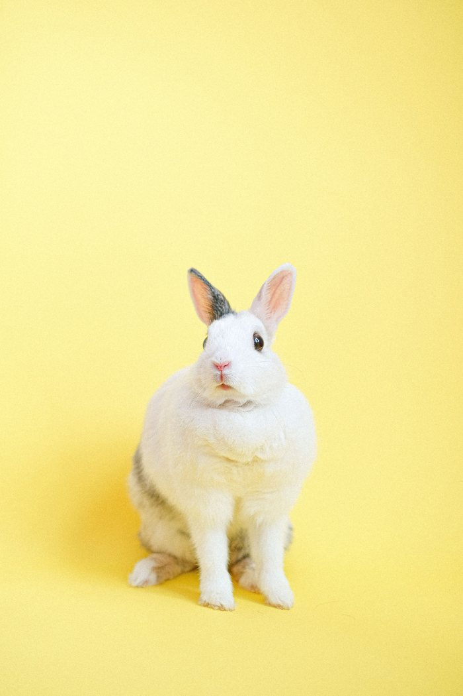

the index
Is it cruelty-free? Check a brand
betaStill testing this. Something wrong or not working? hello@ahomekind.com
show me
certification
browse by category
beauty & skincare
🐰 cruelty-free, check vegan status per product
#NEWGEN
Cruelty Free International approved brand. Cruelty-free approved by Cruelty Free International.
🐰 cruelty-free, check vegan status per product
17
17 believes in unbelievable beauty, elevated quality and accessible prices. Extensive range of affordable make-up essentials formulated with vegan ingredients. Cruelty-free approved by Cruelty Free International.
🐰 cruelty-free, check vegan status per product
7th Heaven
For over 30 years stood against animal testing, a founding CICAW member, approved by Cruelty Free International. Cruelty-free approved by Cruelty Free International.
🐰 cruelty-free, check vegan status per product
A Little Something
Cruelty Free International approved brand. Cruelty-free approved by Cruelty Free International.
🐰 cruelty-free, check vegan status per product
Abundant Natural Health
Dedicated to providing natural pain relief options with highly concentrated Magnesium Ranges. Australia's first stingless formulation. Cruelty-free approved by Cruelty Free International.
🐰 cruelty-free, check vegan status per product
Academy of Colour
Must-have beauty buys for less, powered by highly coveted ingredients and aesthetic packaging. Cruelty-free approved by Cruelty Free International.
🐰 cruelty-free, check vegan status per product
Adaptology
Cruelty Free International approved brand. Cruelty-free approved by Cruelty Free International.
🐰 cruelty-free, check vegan status per product
Addition Studio
Established in Australia in 2010, a conscious company envisioning refined design, healthy lifestyle and a clear mind. Cruelty-free approved by Cruelty Free International.
🐰 cruelty-free, check vegan status per product
Aesop
Established in 1987, formulates skin, hair and body care products of the finest quality. Cruelty-free approved by Cruelty Free International.
🐰 cruelty-free, check vegan status per product
Alba Botanica
Listed by PETA as not testing on animals.
🐰 cruelty-free, check vegan status per product
Almora Botanica
Cruelty Free International approved brand. Cruelty-free approved by Cruelty Free International.
🐰 cruelty-free, check vegan status per product
Alta Marea
A prestige suncare brand crafting high-performance products rooted in Italian heritage. Cruelty-free approved by Cruelty Free International.
🐰 cruelty-free, check vegan status per product
Alter/Native by Suma
Buying from Suma promotes cruelty-free, vegetarian, organic products. Cruelty-free approved by Cruelty Free International.
🐰 cruelty-free, check vegan status per product
Alucia Organics
Cruelty Free International approved brand. Cruelty-free approved by Cruelty Free International.
🐰 cruelty-free, check vegan status per product
Amaras
Peruvian haircare brand combining natural-origin ingredients with rich sensorial experiences. Cruelty-free approved by Cruelty Free International.
🐰 cruelty-free, check vegan status per product
American Safety Razor
Listed by PETA as not testing on animals.
🐰 cruelty-free, check vegan status per product
Anara Skincare
Created using the highest quality plant-based ingredients, helping with the well-ageing process. Cruelty-free approved by Cruelty Free International.
🐰 cruelty-free, check vegan status per product
Anastasia Beverly Hills
Listed by PETA as not testing on animals.
🐰 cruelty-free, check vegan status per product
Andalou Naturals
Listed by PETA as not testing on animals.
🐰 cruelty-free, check vegan status per product
Anko
Cruelty Free International approved brand. Cruelty-free approved by Cruelty Free International.
🐰 cruelty-free, check vegan status per product
Aqua Natural
Established in 1988, pioneered the introduction of strip sugar hair removal to the UK market. Cruelty-free approved by Cruelty Free International.
🐰 cruelty-free, check vegan status per product
Ar Ocean
Cruelty Free International approved brand. Cruelty-free approved by Cruelty Free International.
🐰 cruelty-free, check vegan status per product
Arbonne International
Listed by PETA as not testing on animals.
🌿 fully cruelty-free & vegan
Arctic Fox
PETA certified and Leaping Bunny listed, and vegan across the range. Independently owned.
🐰 cruelty-free, check vegan status per product
AREU AREU
A safe living care brand seeking to deliver a healthy and stylish lifestyle. Cruelty-free approved by Cruelty Free International.
🐰 cruelty-free, check vegan status per product
Argital
Green clay-based cosmetics, natural certified and preservative free, established in Milan in 1979. Cruelty-free approved by Cruelty Free International.
🐰 cruelty-free, check vegan status per product
Arithmos
A precious collection of decadent oil blends, micro-batched and hand-blended. Cruelty-free approved by Cruelty Free International.
🌿 fully cruelty-free & vegan
Arkive Headcare
Leaping Bunny certified, 100% vegan, independent brand founded by Adam Reed.
🐰 cruelty-free, check vegan status per product
Aromatherapy Associates
Founded in London in 1985 by pioneering therapists, born from a belief in the transformative power of essential oils. Cruelty-free approved by Cruelty Free International.
🐰 cruelty-free, check vegan status per product
Atelier Rebul
Over 125 years of dedication to scent expertise and pharmaceutical heritage. Cruelty-free approved by Cruelty Free International.
🐰 cruelty-free, check vegan status per product
atikha
All about curly hair, creating unique and exotic blends for the best results. Cruelty-free approved by Cruelty Free International.
🌿 fully cruelty-free & vegan
Attitude
PETA certified cruelty-free and 100% vegan, independently owned -- household and personal care, sold via Ocado and Holland & Barrett.
🐰 cruelty-free, check vegan status per product
Aunt Fannie's
Listed by PETA as not testing on animals.
🐰 cruelty-free, check vegan status per product
Aurelia London
A multi award-winning probiotic skincare brand fusing BioOrganic botanicals with proven probiotic ingredients. Cruelty-free approved by Cruelty Free International.
🐰 cruelty-free, check vegan status per product
Australian Gold
Listed by PETA as not testing on animals.
🐰 cruelty-free, check vegan status per product
Avalon Organics
Listed by PETA as not testing on animals.
🌿 fully cruelty-free & vegan
Avon (outside North America)
This listing doesn't cover Avon in the US or Canada. Avon there is a different company and isn't certified cruelty-free. Avon International is certified cruelty-free by Leaping Bunny / Cruelty Free International. Its listing names Africa & The Middle East, Asia, Europe and South & Central America. Avon confirmed to me by email that all of its products are vegan, but it has no vegan certification. Regent LP, an investment company rather than a manufacturer, owns Avon in Europe, Asia and Africa (it bought Avon International from Natura, reported as closed in January 2026), and Natura keeps Latin America. Regent has no animal testing policy of its own that applies to Avon. What counts is each brand's own policy. Not sure which Avon you're buying? Check that it comes from one of Avon's sites outside North America, such as avon.uk.com in the UK or avon.co.in in India, and look for the Leaping Bunny logo. Avon's site for the US and Canada, avon.com, isn't covered. Avon's India site says all of its beauty products are approved under the Leaping Bunny programme.
🐰 cruelty-free, check vegan status per product
Awake Organics
Creates hemp and frankincense-infused skin care, botanical fragrance, and natural deodorant. Cruelty-free approved by Cruelty Free International.
🐰 cruelty-free, check vegan status per product
B Skincare
A family run business making natural skincare creams on Bodmin Moor in Cornwall. Cruelty-free approved by Cruelty Free International.
🐰 cruelty-free, check vegan status per product
B.O.B.
Bars Over Bottles is a waterless beauty brand eliminating single-use plastic and toxic ingredients. Cruelty-free approved by Cruelty Free International.
🐰 cruelty-free, check vegan status per product
Bali Body
An Australian-made brand known for natural, cruelty-free suncare, self tan and skincare. Cruelty-free approved by Cruelty Free International.
🐰 cruelty-free, check vegan status per product
Balm Balm
Award-winning multi-functional products including face and lip balms. Cruelty-free approved by Cruelty Free International.
🐰 cruelty-free, check vegan status per product
Batch
Combines heritage ingredients with modern effective formulas, from personal care to home care. Cruelty-free approved by Cruelty Free International.
🐰 cruelty-free, check vegan status per product
Bath House
Born in the Lake District in 1997, believes in using nature's gentle, effective ingredients. Cruelty-free approved by Cruelty Free International.
🐰 cruelty-free, check vegan status per product
Beautiful Brows & Lashes
Cruelty Free International approved brand. Cruelty-free approved by Cruelty Free International.
🐰 cruelty-free, check vegan status per product
Beauty Favours
An award winning, UK made eco-friendly brand using organic oils, butters and actives. Cruelty-free approved by Cruelty Free International.
🐰 cruelty-free, check vegan status per product
Beauty Kitchen
Cruelty-free and B-Corp certified, but only some products are vegan-certified -- check the individual product.
🐰 cruelty-free, check vegan status per product
Beauty Without Cruelty
All products 100% suitable for vegans and vegetarians, using recycled materials where possible. Cruelty-free approved by Cruelty Free International.
🐰 cruelty-free, check vegan status per product
Bed intentions
A sex and sleep brand for modern wellness. Cruelty-free approved by Cruelty Free International.
🐰 cruelty-free, check vegan status per product
Being
Cruelty Free International approved brand. Cruelty-free approved by Cruelty Free International.
🐰 cruelty-free, check vegan status per product
Bel Rebel
Perfumes that are cruelty-free, predominantly vegan, produced in small batches with compostable packaging. Cruelty-free approved by Cruelty Free International.
🐰 cruelty-free, check vegan status per product
Bellapierre Cosmetics
Produces and manufactures its own products, responding quickly to cosmetic market trends. Cruelty-free approved by Cruelty Free International.
🐰 cruelty-free, check vegan status per product
Benefit
Since 1976 at the forefront of making beauty radically feel-good, the world's #1 brow brand. Cruelty-free approved by Cruelty Free International.
🐰 cruelty-free, check vegan status per product
Biolage
Created in the 90's combining bio-science with the best of nature for hair and scalp health. Cruelty-free approved by Cruelty Free International.
🐰 cruelty-free, check vegan status per product
bioLEON
Producer and importer of organic personal care products, 100% plant origin. Cruelty-free approved by Cruelty Free International.
🐰 cruelty-free, check vegan status per product
Biolet
Cruelty Free International approved brand. Cruelty-free approved by Cruelty Free International.
🐰 cruelty-free, check vegan status per product
Black Girl Sunscreen
Listed by PETA as not testing on animals.
🐰 cruelty-free, check vegan status per product
Blur London
A lab brand helping change the conversation around oily skin. Cruelty-free approved by Cruelty Free International.
🐰 cruelty-free, check vegan status per product
BMT
Cruelty Free International approved brand. Cruelty-free approved by Cruelty Free International.
🐰 cruelty-free, check vegan status per product
Bob's Red Mill
Listed by PETA as not testing on animals.
🐰 cruelty-free, check vegan status per product
Boots
The UK's leading health and beauty retailer for 175 years. Cruelty-free approved by Cruelty Free International.
🐰 cruelty-free, check vegan status per product
Botanica Slavica
Uses local natural extracts, conveying quality with ethical and ecological thinking. Cruelty-free approved by Cruelty Free International.
🐰 cruelty-free, check vegan status per product
Botanico Vida Skincare
Cruelty Free International approved brand. Cruelty-free approved by Cruelty Free International.
🐰 cruelty-free, check vegan status per product
Botanics
Born in the UK in 1995 with the vision that nature-inspired beauty products should be accessible to all. Cruelty-free approved by Cruelty Free International.
🐰 cruelty-free, check vegan status per product
Boucleme
Naturally powerful haircare taking curls seriously, packed with plant extracts. Cruelty-free approved by Cruelty Free International.
🐰 cruelty-free, check vegan status per product
Boundary
Founded by two Singaporean entrepreneurs to break boundaries in hair and body care. Cruelty-free approved by Cruelty Free International.
🐰 cruelty-free, check vegan status per product
BPerfect Cosmetics
Listed by PETA as not testing on animals.
🐰 cruelty-free, check vegan status per product
BRAVE.NEW.HAIR., BRAVE.NEW.CARE.
Creates clean haircare powered by modern, carefully tested ingredients. Cruelty-free approved by Cruelty Free International.
🐰 cruelty-free, check vegan status per product
butter LONDON
Listed by PETA as not testing on animals.
🐰 cruelty-free, check vegan status per product
By Sarah London
On a mission to empower a more conscious life, detailing full ingredient lists. Cruelty-free approved by Cruelty Free International.
🐰 cruelty-free, check vegan status per product
Byellie
A makeup company delivering results-driven products for a confident routine. Cruelty-free approved by Cruelty Free International.
🐰 cruelty-free, check vegan status per product
BYK Beauty
Cruelty Free International approved brand. Cruelty-free approved by Cruelty Free International.
🐰 cruelty-free, check vegan status per product
Byron Bay Skincare
Offers 100% natural products inspired by the beauty of Byron Bay. Cruelty-free approved by Cruelty Free International.
🐰 cruelty-free, check vegan status per product
Calgon bath & body
Calgon's bath and body line is part of PDC Brands. The Calgon water softener is a separate product, listed separately. Listed by PETA as not testing on animals.
🌿 fully cruelty-free & vegan
Callen Olive
100% vegan skincare targeting the specific needs of legs and feet, developed by a podiatrist. Cruelty-free approved by Cruelty Free International.
🐰 cruelty-free, check vegan status per product
Cantu
PETA certified and not sold where testing is required, though its parent company is a grey area. Cruelty-free but not entirely vegan, so check per product.
🐰 cruelty-free, check vegan status per product
Carol's Daughter
Listed by PETA as not testing on animals.
🐰 cruelty-free, check vegan status per product
Caswell-Massey
Listed by PETA as not testing on animals.
🐰 cruelty-free, check vegan status per product
Cellis
A science-led skincare brand offering high-performance, multi-functional formulas. Cruelty-free approved by Cruelty Free International.
🐰 cruelty-free, check vegan status per product
CELUI by Anisa Sojka
Founded by UK's leading hair content creator. Cruelty-free approved by Cruelty Free International.
🐰 cruelty-free, check vegan status per product
Cenoura & Bronze
Cruelty Free International approved brand. Cruelty-free approved by Cruelty Free International.
🐰 cruelty-free, check vegan status per product
Cherish
A personal care wet wipes brand designed with convenience, hygiene, and sustainability in mind. Cruelty-free approved by Cruelty Free International.
🐰 cruelty-free, check vegan status per product
Childs Farm
The fastest growing and second largest baby & child toiletries brand in the UK. Cruelty-free approved by Cruelty Free International.
🐰 cruelty-free, check vegan status per product
CJ Olive Young
Listed by PETA as not testing on animals.
🐰 cruelty-free, check vegan status per product
Clemence Organics
Creates Australia's best certified organic and naturopathically formulated skin care. Cruelty-free approved by Cruelty Free International.
🐰 cruelty-free, check vegan status per product
Coco and Lola
Cruelty Free International approved brand. Cruelty-free approved by Cruelty Free International.
🐰 cruelty-free, check vegan status per product
Collection
Collection says it doesn't test on animals itself and doesn't sell where testing is required by law, though it isn't Leaping Bunny or PETA certified. It's only made new products vegan since 2020, so vegan status varies by product - check the label.
🐰 cruelty-free, check vegan status per product
ColourPop Cosmetics
Listed by PETA as not testing on animals.
🐰 cruelty-free, check vegan status per product
Concrete Minerals
Listed by PETA as not testing on animals.
🐰 cruelty-free, check vegan status per product
Copper & Black
Cruelty Free International approved brand. Cruelty-free approved by Cruelty Free International.
🐰 cruelty-free, check vegan status per product
Cover FX Skin Care
Listed by PETA as not testing on animals.
🐰 cruelty-free, check vegan status per product
Cowshed
Cruelty Free International approved brand. Cruelty-free approved by Cruelty Free International.
🐰 cruelty-free, check vegan status per product
COZIUM
A science-led skincare brand creating intentional, fragrance-free face and body essentials. Cruelty-free approved by Cruelty Free International.
🐰 cruelty-free, check vegan status per product
CRANBOURN
Established in London, dedicated to creating sustainable luxury fragrances. Cruelty-free approved by Cruelty Free International.
🐰 cruelty-free, check vegan status per product
Crayola Beauty
Listed by PETA as not testing on animals.
🐰 cruelty-free, check vegan status per product
Cult Candy Cosmetics
A vegan and cruelty free makeup brand for everyone. Cruelty-free approved by Cruelty Free International.
🐰 cruelty-free, check vegan status per product
Cultivator Natural Products
Since 1988, discovering nature's inherent quality and delivering it to the community. Cruelty-free approved by Cruelty Free International.
🐰 cruelty-free, check vegan status per product
Cultured
A new way of approaching looking after your skin, especially the microbiome. Cruelty-free approved by Cruelty Free International.
🐰 cruelty-free, check vegan status per product
Curl Jar
A plant-powered curl activator that enriches natural pattern, tames frizz and hydrates. Cruelty-free approved by Cruelty Free International.
🐰 cruelty-free, check vegan status per product
Cyzone
A high-quality yet accessible beauty brand connecting young women in Latin America. Cruelty-free approved by Cruelty Free International.
🐰 cruelty-free, check vegan status per product
D'las
Cruelty Free International approved brand. Cruelty-free approved by Cruelty Free International.
🐰 cruelty-free, check vegan status per product
Daise
Certified cruelty-free by Cruelty Free International (Leaping Bunny). Not every product is vegan, so vegan varies by product.
🐰 cruelty-free, check vegan status per product
derma-e Natural Bodycare
Listed by PETA as not testing on animals.
🐰 cruelty-free, check vegan status per product
Dermacare
A line of natural skin care products, based in Honduras with local ingredients. Cruelty-free approved by Cruelty Free International.
🐰 cruelty-free, check vegan status per product
Desert Essence
Listed by PETA as not testing on animals.
🐰 cruelty-free, check vegan status per product
Design Essentials
Listed by PETA as not testing on animals.
🐰 cruelty-free, check vegan status per product
Dial
America's trusted brand for over 70 years, delivering clean, healthy skin. Cruelty-free approved by Cruelty Free International.
🐰 cruelty-free, check vegan status per product
Dianne Caine Australia
An innovative natural skin, body and hair care brand made in Perth. Cruelty-free approved by Cruelty Free International.
🐰 cruelty-free, check vegan status per product
Ditto Balms
Creates artisan solid perfumes inspired by designer fragrances, vegan and handmade. Cruelty-free approved by Cruelty Free International.
🐰 cruelty-free, check vegan status per product
Dolce & Gabbana Beauty
Listed by PETA as not testing on animals.
🐰 cruelty-free, check vegan status per product
Doussy
Cruelty Free International approved brand. Cruelty-free approved by Cruelty Free International.
🐰 cruelty-free, check vegan status per product
Down to Earth
Natural homemade creams and balms, formulated and made in Lancashire by hand. Cruelty-free approved by Cruelty Free International.
🐰 cruelty-free, check vegan status per product
Dr Bronner's
Leaping Bunny and PETA certified cruelty-free. Vegan except lip and body balms, which contain beeswax.
🐰 cruelty-free, check vegan status per product
DR HEALD
Cruelty Free International approved brand. Cruelty-free approved by Cruelty Free International.
🐰 cruelty-free, check vegan status per product
Dr Jackson's
A sustainable, science-led cosmetics company from the UK creating natural skincare and organic herbal teas. Cruelty-free approved by Cruelty Free International.
🐰 cruelty-free, check vegan status per product
Dr Organic
Certified cruelty-free (Leaping Bunny / Cruelty Free International); check individual product vegan status as not every item in the range is vegan.
🌿 fully cruelty-free & vegan
Dr PawPaw
PETA approved and certified, and the brand states its whole range is vegan-friendly. UK independent.
🐰 cruelty-free, check vegan status per product
Dr Sam's
Founded in 2018 by Dr Sam Bunting, cutting through the noise of skincare shopping. Cruelty-free approved by Cruelty Free International.
🐰 cruelty-free, check vegan status per product
Dr. Dennis Gross Skincare
Listed by PETA as not testing on animals.
🐰 cruelty-free, check vegan status per product
Dr. Hauschka Skin Care
Listed by PETA as not testing on animals.
🐰 cruelty-free, check vegan status per product
DUO
Cruelty Free International approved brand. Cruelty-free approved by Cruelty Free International.
🌿 fully cruelty-free & vegan
e.l.f. cosmetics
Owned by e.l.f. Beauty, Inc., a publicly traded company (NYSE: ELF). Certified cruelty-free by Leaping Bunny and PETA, and certified vegan by PETA (Beauty Without Bunnies).
🐰 cruelty-free, check vegan status per product
Earth Conscious
Committed to providing natural skincare with minimal impact, made in the UK on the Isle of Wight. Cruelty-free approved by Cruelty Free International.
🐰 cruelty-free, check vegan status per product
Earth Friendly Products
Listed by PETA as not testing on animals.
🐰 cruelty-free, check vegan status per product
Earth Sense
COSMOS organic certified, ethically Fair Trade sourced, Certified Palm Oil products. Cruelty-free approved by Cruelty Free International.
🐰 cruelty-free, check vegan status per product
Earthy Nail Polish
A 21-free, vegan nail polish brand made with naturally derived plant-based ingredients. Cruelty-free approved by Cruelty Free International.
🐰 cruelty-free, check vegan status per product
Eco-DenT International
Listed by PETA as not testing on animals.
🐰 cruelty-free, check vegan status per product
Ecoleaf by Suma
Buying from Suma promotes cruelty-free, vegetarian, organic products. Cruelty-free approved by Cruelty Free International.
🐰 cruelty-free, check vegan status per product
Elegance
A fast-growing, affordable toilet tissue brand providing great value on a daily essential. Cruelty-free approved by Cruelty Free International.
🐰 cruelty-free, check vegan status per product
Eminence Organic Skin Care
Listed by PETA as not testing on animals.
🐰 cruelty-free, check vegan status per product
Emma Hardie
Skincare based on targeted botanicals to support complexions of all ages. Cruelty-free approved by Cruelty Free International.
🐰 cruelty-free, check vegan status per product
eos
Leaping Bunny and PETA certified, and doesn't sell in mainland China. Cruelty-free but not entirely vegan, so check per product.
🐰 cruelty-free, check vegan status per product
Epiderma
Specialises in innovation for psoriasis, eczema, and acne solutions. Cruelty-free approved by Cruelty Free International.
🐰 cruelty-free, check vegan status per product
Esika
Creates products with high quality standards to make women feel absolute confidence. Cruelty-free approved by Cruelty Free International.
🐰 cruelty-free, check vegan status per product
Eternal Skincare
Creates effective, gentle skincare designed for dry, sensitive, and maturing skin. Cruelty-free approved by Cruelty Free International.
🌿 fully cruelty-free & vegan
Ethique
Leaping Bunny certified and 100% vegan, plastic-free solid bars -- sold in Holland & Barrett and online.
🐰 cruelty-free, check vegan status per product
Eudora
Launched in 2011 helping women assume their place as protagonists with rights. Cruelty-free approved by Cruelty Free International.
🐰 cruelty-free, check vegan status per product
European Wax Center
Listed by PETA as not testing on animals.
🐰 cruelty-free, check vegan status per product
Evdaimonia
Brings silk into daily beauty rituals, creating natural silk cocoons for pure, cruelty-free exfoliation. Cruelty-free approved by Cruelty Free International.
🐰 cruelty-free, check vegan status per product
Every Man Jack
Listed by PETA as not testing on animals.
🐰 cruelty-free, check vegan status per product
every&one
Sustainable skincare, a 5-in-1 multi-tasking fragrance free, genderless formula. Cruelty-free approved by Cruelty Free International.
🐰 cruelty-free, check vegan status per product
Evolve Organic Beauty
An award winning British producer of natural and organic skin, body and hair products. Cruelty-free approved by Cruelty Free International.
🐰 cruelty-free, check vegan status per product
Evre
A clean and natural range of skincare formulated for tween and teen skin. Cruelty-free approved by Cruelty Free International.
🐰 cruelty-free, check vegan status per product
FAB Brows
Manufacture and retail a revolutionary all-in-one brow makeover system. Cruelty-free approved by Cruelty Free International.
🐰 cruelty-free, check vegan status per product
Facetheory
A British skincare brand producing natural vegan skincare with super-effective active ingredients. Cruelty-free approved by Cruelty Free International.
🐰 cruelty-free, check vegan status per product
Faith in Nature
UK, Leaping Bunny certified, budget-friendly.
🐰 cruelty-free, check vegan status per product
FatFace
A fast-growing lifestyle clothing and accessories retailer based in the UK. Cruelty-free approved by Cruelty Free International.
🐰 cruelty-free, check vegan status per product
Fill Refill Co.
Responsible & refillable laundry, cleaning, body & hair care refills, registered with 1% For The Planet. Cruelty-free approved by Cruelty Free International.
🐰 cruelty-free, check vegan status per product
Filter by Molly-Mae
Created by Molly-Mae Hague to revolutionize the way we tan. Cruelty-free approved by Cruelty Free International.
🐰 cruelty-free, check vegan status per product
First Aid Beauty
Listed by PETA as not testing on animals.
🐰 cruelty-free, check vegan status per product
Floralys
Cruelty Free International approved brand. Cruelty-free approved by Cruelty Free International.
🐰 cruelty-free, check vegan status per product
Florence By Mills
Listed by PETA as not testing on animals.
🐰 cruelty-free, check vegan status per product
Florentine
Cruelty Free International approved brand. Cruelty-free approved by Cruelty Free International.
🐰 cruelty-free, check vegan status per product
Forest & Shore
Dedicated to creating clean haircare that targets the root of the problem. Cruelty-free approved by Cruelty Free International.
🐰 cruelty-free, check vegan status per product
Forest Essentials
Listed by PETA as not testing on animals.
🐰 cruelty-free, check vegan status per product
formil
Cruelty Free International approved brand. Cruelty-free approved by Cruelty Free International.
🐰 cruelty-free, check vegan status per product
Formulae Prescott
Frances Prescott is a natural and cruelty free brand offering sustainably sourced products. Cruelty-free approved by Cruelty Free International.
🐰 cruelty-free, check vegan status per product
Freeman Beauty
Listed by PETA as not testing on animals.
🐰 cruelty-free, check vegan status per product
Fresh & Dry
Talc-Free Baby Powder made in the UK, independently certified. Cruelty-free approved by Cruelty Free International.
🐰 cruelty-free, check vegan status per product
FRIA
Made in Italy cosmetic products for personal hygiene, care and cleansing. Cruelty-free approved by Cruelty Free International.
🐰 cruelty-free, check vegan status per product
FRIA 1000 GIORNI
Made in Italy cosmetic products for personal hygiene, care and cleansing. Cruelty-free approved by Cruelty Free International.
🐰 cruelty-free, check vegan status per product
FRIA EASY
Made in Italy cosmetic products for personal hygiene, care and cleansing. Cruelty-free approved by Cruelty Free International.
🐰 cruelty-free, check vegan status per product
FRIA k-Beauty Inspired
Made in Italy cosmetic products for personal hygiene, care and cleansing. Cruelty-free approved by Cruelty Free International.
🐰 cruelty-free, check vegan status per product
Friendly Soap
Uses only natural, ethically sourced, sustainable and plant based ingredients for eco-friendly cleaning products. Cruelty-free approved by Cruelty Free International.
🐰 cruelty-free, check vegan status per product
Fruit of the Earth
Listed by PETA as not testing on animals.
🐰 cruelty-free, check vegan status per product
Fuarain Skincare
Premium skincare powered by a unique Scottish mineral water blended with wildcrafted botanical actives. Cruelty-free approved by Cruelty Free International.
🐰 cruelty-free, check vegan status per product
Fudge
Haircare. Listed by PETA as not testing on animals.
🐰 cruelty-free, check vegan status per product
Function of Beauty
Listed by PETA as not testing on animals.
🐰 cruelty-free, check vegan status per product
Furtastic
Cruelty Free International approved brand. Cruelty-free approved by Cruelty Free International.
🐰 cruelty-free, check vegan status per product
Fushi
Began with Ayurvedic family recipes, creating award-winning ethically sourced health and beauty products. Cruelty-free approved by Cruelty Free International.
🐰 cruelty-free, check vegan status per product
Gaia Skincare
Inspired by the Greek Goddess, handmade in Britain using traditional production methods. Cruelty-free approved by Cruelty Free International.
🐰 cruelty-free, check vegan status per product
Garden of Life
Listed by PETA as not testing on animals.
🐰 cruelty-free, check vegan status per product
GATINEAU
Harnesses the power of natural ingredients and cutting-edge biotechnology, over 90 years of trust. Cruelty-free approved by Cruelty Free International.
🐰 cruelty-free, check vegan status per product
GEL.IT.UP by GIUP
Professional gel polish, builder gel and nail systems, HEMA-free formulas. Cruelty-free approved by Cruelty Free International.
🐰 cruelty-free, check vegan status per product
Gelish
Nail brand. Listed by PETA as not testing on animals.
🐰 cruelty-free, check vegan status per product
Gender Neutral
Cruelty Free International approved brand. Cruelty-free approved by Cruelty Free International.
🐰 cruelty-free, check vegan status per product
GenGlo
Founded to protect young skin, providing gentle, effective skincare for tweens and teens. Cruelty-free approved by Cruelty Free International.
🐰 cruelty-free, check vegan status per product
GHS Direct
Specialises in biodegradable and concentrate liquid disinfectants, sanitisers and detergents. Cruelty-free approved by Cruelty Free International.
🐰 cruelty-free, check vegan status per product
Gingingers
A small family run skincare business in West Yorkshire creating natural, cold-processed products. Cruelty-free approved by Cruelty Free International.
🐰 cruelty-free, check vegan status per product
Girls with Attitude
Creating sassy, trend led products with affordable prices and professional quality. Cruelty-free approved by Cruelty Free International.
🐰 cruelty-free, check vegan status per product
Glo Skin Beauty
Listed by PETA as not testing on animals.
🐰 cruelty-free, check vegan status per product
Glow For It
A vegan, cruelty-free beauty brand best known for its TikTok viral Lash Growth Serum. Cruelty-free approved by Cruelty Free International.
🐰 cruelty-free, check vegan status per product
Glow Hub
Hard-working formulas and personalisable routines for skin. Cruelty-free approved by Cruelty Free International.
🐰 cruelty-free, check vegan status per product
Go-To Skincare
Listed by PETA as not testing on animals.
🐰 cruelty-free, check vegan status per product
Goats of the Gorge
Skin care products made with goat's milk and natural oils, from near Bristol airport. Cruelty-free approved by Cruelty Free International.
🐰 cruelty-free, check vegan status per product
Good Bubble
Bath, body and haircare products for babies & children, mild and gentle formulations. Cruelty-free approved by Cruelty Free International.
🐰 cruelty-free, check vegan status per product
Good One
The Warehouse is New Zealand's biggest one stop shop for great products at a bargain. Cruelty-free approved by Cruelty Free International.
🐰 cruelty-free, check vegan status per product
GOSH Copenhagen
Listed by PETA as not testing on animals.
🐰 cruelty-free, check vegan status per product
Grande Cosmetics
Listed by PETA as not testing on animals.
🐰 cruelty-free, check vegan status per product
Green Wave
A family hair line with a unique formulation, enriched with organic aloe vera. Cruelty-free approved by Cruelty Free International.
🐰 cruelty-free, check vegan status per product
Grown Alchemist
Listed by PETA as not testing on animals.
🐰 cruelty-free, check vegan status per product
Hair by Sam McKnight
Iconic hairstylist Sam McKnight's kit of high-performance products. Cruelty-free approved by Cruelty Free International.
🐰 cruelty-free, check vegan status per product
Handmade Naturals
A family run firm with an emphasis on natural ingredients, covering body care to natural soaps. Cruelty-free approved by Cruelty Free International.
🐰 cruelty-free, check vegan status per product
Hanna Sillitoe
A best-selling author and world-renowned expert in skin healing. Cruelty-free approved by Cruelty Free International.
🐰 cruelty-free, check vegan status per product
Hannah Natural
Cruelty Free International approved brand. Cruelty-free approved by Cruelty Free International.
🐰 cruelty-free, check vegan status per product
HAPPY ANNE
Cruelty Free International approved brand. Cruelty-free approved by Cruelty Free International.
🐰 cruelty-free, check vegan status per product
Helan
One of Italy's leading companies specializing in Natural Cosmetics. Cruelty-free approved by Cruelty Free International.
🐰 cruelty-free, check vegan status per product
Hello Products
Listed by PETA as not testing on animals.
🐰 cruelty-free, check vegan status per product
Herbal Elea
Producer and importer of organic personal care products, 100% plant origin. Cruelty-free approved by Cruelty Free International.
🐰 cruelty-free, check vegan status per product
Herbivore Botanicals
Listed by PETA as not testing on animals.
🐰 cruelty-free, check vegan status per product
Hershesons
Believes great hair should be simple, easy and fun no matter who you are. Cruelty-free approved by Cruelty Free International.
🐰 cruelty-free, check vegan status per product
Hiip
Cruelty Free International approved brand. Cruelty-free approved by Cruelty Free International.
🐰 cruelty-free, check vegan status per product
Honeybee Gardens
Listed by PETA as not testing on animals.
🐰 cruelty-free, check vegan status per product
HOWND
A multi-award winning ethical pet care brand loved by dog owners and professional groomers. Cruelty-free approved by Cruelty Free International.
🌿 fully cruelty-free & vegan
Hurraw!
Choose Cruelty-Free, Leaping Bunny and PETA certified -- 100% vegan lip balms, sold in Holland & Barrett and online.
🐰 cruelty-free, check vegan status per product
i+m NATURKOSMETIK BERLIN
A true pioneer in organic and natural cosmetics, active since 1978. Cruelty-free approved by Cruelty Free International.
🐰 cruelty-free, check vegan status per product
Iconic London
Listed by PETA as not testing on animals.
🐰 cruelty-free, check vegan status per product
IDUN Minerals
Listed by PETA as not testing on animals.
🐰 cruelty-free, check vegan status per product
Image Skincare
Listed by PETA as not testing on animals.
🐰 cruelty-free, check vegan status per product
INCIA
Glohe offers a 100% natural world for your family, free from synthetic scents and parabens. Cruelty-free approved by Cruelty Free International.
🐰 cruelty-free, check vegan status per product
Inglot Cosmetics
Listed by PETA as not testing on animals.
🐰 cruelty-free, check vegan status per product
Inhana Skincare
Inari Skincare produces luxury, certified natural skincare brands hand-crafted in the UK. Cruelty-free approved by Cruelty Free International.
🐰 cruelty-free, check vegan status per product
Inlight Beauty & Wellness
100% organic skincare, highly effective products hand-crafted in small batches. Cruelty-free approved by Cruelty Free International.
🐰 cruelty-free, check vegan status per product
IREN Shizen
A luxury Japanese skincare brand best known for its BIYUSEN proprietary bio-ingredient. Cruelty-free approved by Cruelty Free International.
🐰 cruelty-free, check vegan status per product
Isle Of Paradise
Listed by PETA as not testing on animals.
🐰 cruelty-free, check vegan status per product
itreatskin
Specialises in problematic skin such as Eczema, Acne, Psoriasis and Pigmentation. Cruelty-free approved by Cruelty Free International.
🐰 cruelty-free, check vegan status per product
J Beverly Hills
Listed by PETA as not testing on animals.
🐰 cruelty-free, check vegan status per product
jane iredale
The Skin Care Makeup. Listed by PETA as not testing on animals.
🐰 cruelty-free, check vegan status per product
Je Suis Vert
Owned by Monoprix, a leader in omnichannel town centre shopping in France. Cruelty-free approved by Cruelty Free International.
🐰 cruelty-free, check vegan status per product
Jesse's Girl Cosmetics
Listed by PETA as not testing on animals.
🐰 cruelty-free, check vegan status per product
Jeuneora
Uses the power of nature with a helping hand from science for natural supplements and cruelty-free skincare. Cruelty-free approved by Cruelty Free International.
🐰 cruelty-free, check vegan status per product
John Lewis & Partners
Cruelty Free International approved brand. Cruelty-free approved by Cruelty Free International.
🐰 cruelty-free, check vegan status per product
John Masters Organics
Listed by PETA as not testing on animals.
🐰 cruelty-free, check vegan status per product
John Paul Mitchell Systems
Listed by PETA as not testing on animals.
🐰 cruelty-free, check vegan status per product
Josie Maran Cosmetics
Listed by PETA as not testing on animals.
🐰 cruelty-free, check vegan status per product
Julie Clarke Candles
Uses 100% pure natural waxes from a biodegradable renewable resource, with vegan fragrances. Cruelty-free approved by Cruelty Free International.
🐰 cruelty-free, check vegan status per product
Juvenate Skincare
New Zealand's largest Professional Clinic Range delivering transformative skincare. Cruelty-free approved by Cruelty Free International.
🐰 cruelty-free, check vegan status per product
Kadalys
France's first natural, organic, vegan cosmetics brand, expert in the science of the banana tree. Cruelty-free approved by Cruelty Free International.
🐰 cruelty-free, check vegan status per product
KASH Beauty
An Irish cosmetics brand offering high-performance, cruelty-free makeup for all skin tones. Cruelty-free approved by Cruelty Free International.
🐰 cruelty-free, check vegan status per product
Kate Somerville
Listed by PETA as not testing on animals.
🐰 cruelty-free, check vegan status per product
KATIVA
Cruelty Free International approved brand. Cruelty-free approved by Cruelty Free International.
🐰 cruelty-free, check vegan status per product
Katoa Botanicals
A circular, plastic free skincare brand connecting people and planet. Cruelty-free approved by Cruelty Free International.
🐰 cruelty-free, check vegan status per product
Keys Soulcare
Listed by PETA as not testing on animals.
🐰 cruelty-free, check vegan status per product
Kids Stuff
Cruelty Free International approved brand. Cruelty-free approved by Cruelty Free International.
🐰 cruelty-free, check vegan status per product
King of Shaves
Listed by PETA as not testing on animals.
🐰 cruelty-free, check vegan status per product
Kireyna
A Berlin-based skincare brand with a three-product system supporting the skin's barrier. Cruelty-free approved by Cruelty Free International.
🐰 cruelty-free, check vegan status per product
Kiss Products
Listed by PETA as not testing on animals.
🐰 cruelty-free, check vegan status per product
Kmart
We're Kmart, here to make everyday living brighter since 1969 in Victoria. Cruelty-free approved by Cruelty Free International. This listing is for Kmart in Australia and New Zealand.
🐰 cruelty-free, check vegan status per product
Kone Care
A Mexican brand with conscious cosmetic formulas that nourish skin and take care of the environment. Cruelty-free approved by Cruelty Free International.
🐰 cruelty-free, check vegan status per product
Kora Organics
Listed by PETA as not testing on animals.
🐰 cruelty-free, check vegan status per product
KOTANICAL
The first company in Ireland to distil oil from natural native sources. Cruelty-free approved by Cruelty Free International.
🐰 cruelty-free, check vegan status per product
Kristin Ess Hair
Listed by PETA as not testing on animals.
🐰 cruelty-free, check vegan status per product
Kryolan Professional Make-up
Listed by PETA as not testing on animals.
🐰 cruelty-free, check vegan status per product
Kurl Kitchen
A haircare brand by sisters Fleur and Keshia, bringing West African kitchen ingredients. Cruelty-free approved by Cruelty Free International.
🐰 cruelty-free, check vegan status per product
KVD Beauty
Formerly Kat Von D Beauty. Listed by PETA as not testing on animals.
🐰 cruelty-free, check vegan status per product
KVITOK
A Slovak brand of all natural handmade cosmetics, built on the belief skin reflects internal health. Cruelty-free approved by Cruelty Free International.
🐰 cruelty-free, check vegan status per product
Kyushi
High performing, sustainably sourced, cruelty free, hand blended mindful products. Cruelty-free approved by Cruelty Free International.
🐰 cruelty-free, check vegan status per product
L'BEL
Where beauty, health and technology merge. Cruelty-free approved by Cruelty Free International.
🐰 cruelty-free, check vegan status per product
L'Erbolario Societa Benefit Srl
An Italian company founded in 1978 in Lodi, manufacturing plant-based cosmetics. Cruelty-free approved by Cruelty Free International.
🐰 cruelty-free, check vegan status per product
La Cosmetica srl
Cruelty Free International approved brand. Cruelty-free approved by Cruelty Free International.
🐰 cruelty-free, check vegan status per product
LABBOK
An innovative manufacturer of premium organic skincare, 100% natural, vegan and cruelty free. Cruelty-free approved by Cruelty Free International.
🐰 cruelty-free, check vegan status per product
Lanolips
Award-winning, Aussie, dry-skin stuff made with love and lanolin, natural + cruelty-free. Cruelty-free approved by Cruelty Free International.
🐰 cruelty-free, check vegan status per product
lavera Naturkosmetik
Listed by PETA as not testing on animals.
🐰 cruelty-free, check vegan status per product
Leeukopf Laboratories
Cruelty Free International approved brand. Cruelty-free approved by Cruelty Free International.
🐰 cruelty-free, check vegan status per product
Lefay SPA Cosmetic Line
Created according to nutricosmetics principles, combining nature and science. Cruelty-free approved by Cruelty Free International.
🐰 cruelty-free, check vegan status per product
Lerana
Cruelty Free International approved brand. Cruelty-free approved by Cruelty Free International.
🐰 cruelty-free, check vegan status per product
Levrana
Natural and organic cosmetics for face, hair and hygiene, for the whole family. Cruelty-free approved by Cruelty Free International.
🐰 cruelty-free, check vegan status per product
Lipstains Gold
Cruelty Free International approved brand. Cruelty-free approved by Cruelty Free International.
🐰 cruelty-free, check vegan status per product
Little Heroes
Provides a wide range of baby wipes including sensitive, gentle and biodegradable. Cruelty-free approved by Cruelty Free International.
🌿 fully cruelty-free & vegan
Little Soap Company
Leaping Bunny and Vegan Society certified, B Corp, independent UK brand.
🐰 cruelty-free, check vegan status per product
Liz Earle
Creates naturally inspired skincare that really works to transform skin for all women. Cruelty-free approved by Cruelty Free International.
🐰 cruelty-free, check vegan status per product
Lock Stock & Barrel
A proudly independent brand of professional men's grooming products, used by leading barbers. Cruelty-free approved by Cruelty Free International.
🐰 cruelty-free, check vegan status per product
London Copyright
A creative and innovative cosmetics brand believing in embracing individuality. Cruelty-free approved by Cruelty Free International.
🐰 cruelty-free, check vegan status per product
Look Fabulous Forever
A movement to celebrate mature beauty and challenge perceptions of ageing. Cruelty-free approved by Cruelty Free International.
🐰 cruelty-free, check vegan status per product
Love Ethical beauty
Cruelty Free International approved brand. Cruelty-free approved by Cruelty Free International.
🐰 cruelty-free, check vegan status per product
Love Katie
Created from 25 years as a professional makeup artist to make beauty simple for everyone. Cruelty-free approved by Cruelty Free International.
🐰 cruelty-free, check vegan status per product
Love Pets
Cruelty Free International approved brand. Cruelty-free approved by Cruelty Free International.
🐰 cruelty-free, check vegan status per product
Lucy Bee
Founded in 2012 by a CIBTAC-qualified beauty therapist and mum, an independent British brand. Cruelty-free approved by Cruelty Free International.
🐰 cruelty-free, check vegan status per product
Lumity
An award-winning range of 100% natural face and body treatments with plant oils and botanicals. Cruelty-free approved by Cruelty Free International.
🐰 cruelty-free, check vegan status per product
Lush
Independently owned, PETA-certified cruelty-free, no animal testing anywhere in the supply chain.
🐰 cruelty-free, check vegan status per product
Madam CJ Walker
Listed by PETA as not testing on animals.
🐰 cruelty-free, check vegan status per product
Made for Life Organics
100% organic wellbeing products hand-blended in Cornwall for 15 years. Cruelty-free approved by Cruelty Free International.
🐰 cruelty-free, check vegan status per product
Made Of More
High performance, Doctor-led, clinically active skincare for hormonal skin from 40 and beyond. Cruelty-free approved by Cruelty Free International.
🐰 cruelty-free, check vegan status per product
Magic Lips
Cruelty Free International approved brand. Cruelty-free approved by Cruelty Free International.
🐰 cruelty-free, check vegan status per product
Magnum Guardex
Cruelty Free International approved brand. Cruelty-free approved by Cruelty Free International.
🐰 cruelty-free, check vegan status per product
ManCave
Discover naturally derived men's grooming gear, combining premium formulas with a fair price. Cruelty-free approved by Cruelty Free International.
🐰 cruelty-free, check vegan status per product
Manufaktura
Collaborates with dermatologists and cosmetics specialists on unique formulae. Cruelty-free approved by Cruelty Free International.
🐰 cruelty-free, check vegan status per product
Maple Holistics
Listed by PETA as not testing on animals.
🐰 cruelty-free, check vegan status per product
Maria Nila
High quality vegan products making it easy to take a step towards a sustainable, friendlier world. Cruelty-free approved by Cruelty Free International.
🐰 cruelty-free, check vegan status per product
Mark Birch Trichlogist
Helps understand what a healthy scalp and better hair growth needs. Cruelty-free approved by Cruelty Free International.
🐰 cruelty-free, check vegan status per product
Maroqueen
A small family business selling cosmetic oils, mostly from Morocco. Cruelty-free approved by Cruelty Free International.
🐰 cruelty-free, check vegan status per product
MAZEL
Grape extract combined with modern technology and a blend of active ingredients from leading laboratories. Cruelty-free approved by Cruelty Free International.
🐰 cruelty-free, check vegan status per product
Mazillo
A natural skincare brand inspired by Bulgarian folklore, reviving history and traditions. Cruelty-free approved by Cruelty Free International.
🐰 cruelty-free, check vegan status per product
Mendittorosa
Artistic perfumes made in Italy. Cruelty-free approved by Cruelty Free International.
🐰 cruelty-free, check vegan status per product
Mervue Natural Skincare
Created a certified organic skin and body care range of the highest quality and efficacy. Cruelty-free approved by Cruelty Free International.
🐰 cruelty-free, check vegan status per product
Mesauda Milano
Listed by PETA as not testing on animals.
🐰 cruelty-free, check vegan status per product
Michael Todd Beauty
Listed by PETA as not testing on animals.
🐰 cruelty-free, check vegan status per product
Micky Day
Designed, tested and hand made in New Zealand, a self-care range. Cruelty-free approved by Cruelty Free International.
🐰 cruelty-free, check vegan status per product
MIELEV
Cruelty Free International approved brand. Cruelty-free approved by Cruelty Free International.
🐰 cruelty-free, check vegan status per product
Mienna Cosmetics Ltd
A cruelty-free cosmetics brand focused on creating beautifully formulated, inclusive makeup. Cruelty-free approved by Cruelty Free International.
🐰 cruelty-free, check vegan status per product
Milani
Certified by both Leaping Bunny and PETA, and not sold where testing is required. Cruelty-free but not entirely vegan, so check per product.
🐰 cruelty-free, check vegan status per product
Milani Cosmetics
Listed by PETA as not testing on animals.
🐰 cruelty-free, check vegan status per product
Miss Organics
100% natural, organic, vegan skincare inspiring holistic living in harmony with nature. Cruelty-free approved by Cruelty Free International.
🐰 cruelty-free, check vegan status per product
Modern Botany
Inspired by botanical science, uses natural ingredients sourced from Ireland and around the world. Cruelty-free approved by Cruelty Free International.
🐰 cruelty-free, check vegan status per product
Molton Brown
Expertly blended in London, signature fragrances, bath and shower gels, home and hand care. Cruelty-free approved by Cruelty Free International.
🐰 cruelty-free, check vegan status per product
Monange
Cruelty Free International approved brand. Cruelty-free approved by Cruelty Free International.
🐰 cruelty-free, check vegan status per product
MONDAY Haircare
An award-winning, modern beauty brand making luxury haircare more inclusive. Cruelty-free approved by Cruelty Free International.
🐰 cruelty-free, check vegan status per product
Moss & Adams
A premium-inspired personal care brand offering vegan and cruelty-free hand washes and lifestyle products. Cruelty-free approved by Cruelty Free International.
🐰 cruelty-free, check vegan status per product
Mother Nailture
A 21-free, vegan nail polish brand made with naturally derived plant-based ingredients. Cruelty-free approved by Cruelty Free International.
🐰 cruelty-free, check vegan status per product
Mum&You
A sustainable baby brand developed in 2016 offering biodegradable baby wipes and eco-nappies. Cruelty-free approved by Cruelty Free International.
🐰 cruelty-free, check vegan status per product
MyChelle Dermaceuticals
Listed by PETA as not testing on animals.
🐰 cruelty-free, check vegan status per product
Nakin
Eco beauty at its absolute best, an award winning luxurious natural skincare system. Cruelty-free approved by Cruelty Free International.
🐰 cruelty-free, check vegan status per product
Nala's Baby
Created by a family wanting the absolute best for their daughter's hair & skin. Cruelty-free approved by Cruelty Free International.
🌿 fully cruelty-free & vegan
Natracare
Vegetarian Society Vegan Approved and PETA Business Friend -- completely cruelty-free and vegan period care.
🐰 cruelty-free, check vegan status per product
Natroma
A family run holistic therapy and handmade aromatherapy skincare business based in Stourbridge. Cruelty-free approved by Cruelty Free International.
🐰 cruelty-free, check vegan status per product
Natura
Cruelty Free International approved brand. Cruelty-free approved by Cruelty Free International.
🐰 cruelty-free, check vegan status per product
Natural by Nature Oils
Established in 1974, manufactures high quality pure and organic essential oils. Cruelty-free approved by Cruelty Free International.
🐰 cruelty-free, check vegan status per product
Naturally Tiwa Skincare
A proudly British company using Mother Nature's gifts to create natural skincare products. Cruelty-free approved by Cruelty Free International.
🐰 cruelty-free, check vegan status per product
Nature's Divine
Values itself to be vegan, cruelty free and eco-friendly with oils and balms for babies and family. Cruelty-free approved by Cruelty Free International.
🐰 cruelty-free, check vegan status per product
Nature's Gate
Listed by PETA as not testing on animals.
🐰 cruelty-free, check vegan status per product
Naturium
Owned by e.l.f. Beauty, Inc. Listed by PETA as not testing on animals.
🐰 cruelty-free, check vegan status per product
Neal & Wolf
A professional haircare brand known for luxurious, high-performance, fully-vegan formulas. Cruelty-free approved by Cruelty Free International.
🐰 cruelty-free, check vegan status per product
Neal's Yard Remedies
Brings the most natural organic health and beauty products to improve quality of life. Cruelty-free approved by Cruelty Free International.
🐰 cruelty-free, check vegan status per product
Nest Fragrances
Listed by PETA as not testing on animals.
🐰 cruelty-free, check vegan status per product
Newman's Own Organics
Listed by PETA as not testing on animals.
🐰 cruelty-free, check vegan status per product
NEX ENVIRONMENT
Cruelty Free International approved brand. Cruelty-free approved by Cruelty Free International.
🐰 cruelty-free, check vegan status per product
NICE
Made in Italy cosmetic products for personal hygiene, care and cleansing. Cruelty-free approved by Cruelty Free International.
🐰 cruelty-free, check vegan status per product
nimonths+
Cruelty Free International approved brand. Cruelty-free approved by Cruelty Free International.
🐰 cruelty-free, check vegan status per product
Nourish London
A British organic skincare company offering high-performance organic, vegan & cruelty-free certified skincare. Cruelty-free approved by Cruelty Free International.
🐰 cruelty-free, check vegan status per product
NOVARETIN
A unique and innovative facial care line with serum, face cream and eye cream. Cruelty-free approved by Cruelty Free International.
🌿 fully cruelty-free & vegan
NSFA Beauty
A 100% vegan & cruelty-free brand launched in 2018 by Czech influencer ANY. Cruelty-free approved by Cruelty Free International.
🐰 cruelty-free, check vegan status per product
Nude by Nature
Listed by PETA as not testing on animals.
🐰 cruelty-free, check vegan status per product
Nunaia
Creates moments of connection through green beauty rituals, researched in Ecuador and Peru. Cruelty-free approved by Cruelty Free International.
🐰 cruelty-free, check vegan status per product
Nursem
Caring skincare developed with nurses to help combat the effects of relentless hand-washing. Cruelty-free approved by Cruelty Free International.
🐰 cruelty-free, check vegan status per product
Nutmeg
Cruelty Free International approved brand. Cruelty-free approved by Cruelty Free International.
🐰 cruelty-free, check vegan status per product
O Boticario
Founded in 1977 in Curitiba, the largest cosmetics franchising network in Brazil. Cruelty-free approved by Cruelty Free International.
🐰 cruelty-free, check vegan status per product
O.U.I
Cruelty Free International approved brand. Cruelty-free approved by Cruelty Free International.
🐰 cruelty-free, check vegan status per product
Obsessive Compulsive Cosmetics
Listed by PETA as not testing on animals.
🐰 cruelty-free, check vegan status per product
Obvs Skincare
Specialises in organic, vegan products that solve skin concerns naturally, handmade by Sian Louise. Cruelty-free approved by Cruelty Free International.
🐰 cruelty-free, check vegan status per product
Oio Lab
Harnesses the power of natural ingredients, extracted with advanced technology. Cruelty-free approved by Cruelty Free International.
🐰 cruelty-free, check vegan status per product
Okiki Skincare
A mother and daughter West African inspired handmade natural skincare brand. Cruelty-free approved by Cruelty Free International.
🐰 cruelty-free, check vegan status per product
Ole Henriksen
Listed by PETA as not testing on animals.
🐰 cruelty-free, check vegan status per product
Omorovicza
A multi award-winning skincare brand harnessing the curative culture of the Budapest baths. Cruelty-free approved by Cruelty Free International.
🐰 cruelty-free, check vegan status per product
Organic Harvest
Listed by PETA as not testing on animals.
🐰 cruelty-free, check vegan status per product
Organic Skin Australia
Launched with a genuine commitment to skincare, the environment, and ethical business practices. Cruelty-free approved by Cruelty Free International.
🐰 cruelty-free, check vegan status per product
Organicspa
Blends bioactive Certified Organic ingredients with potent natural actives, vitamins and oils. Cruelty-free approved by Cruelty Free International.
🐰 cruelty-free, check vegan status per product
ORIBE Hair Care
Listed by PETA as not testing on animals.
🌿 fully cruelty-free & vegan
Original Source
PETA approved, and every product carries the Vegan Society logo (since 2003), according to its own page.
🐰 cruelty-free, check vegan status per product
OXX
Cruelty Free International approved brand. Cruelty-free approved by Cruelty Free International.
🐰 cruelty-free, check vegan status per product
P.Louise
Founded by Paige Williams, starting as a Makeup Academy in 2014, established as Cosmetics in 2018. Cruelty-free approved by Cruelty Free International.
🐰 cruelty-free, check vegan status per product
Pai Skincare
Formulated with sensitive and allergy-prone skin in mind, free from irritants. Cruelty-free approved by Cruelty Free International.
🐰 cruelty-free, check vegan status per product
Paixao
Cruelty Free International approved brand. Cruelty-free approved by Cruelty Free International.
🐰 cruelty-free, check vegan status per product
Paladone
Cruelty Free International approved brand. Cruelty-free approved by Cruelty Free International.
🐰 cruelty-free, check vegan status per product
Pamoja
An award-winning natural, vegan and cruelty-free skincare brand for dry, sensitive and hormonal skin. Cruelty-free approved by Cruelty Free International.
🐰 cruelty-free, check vegan status per product
Pangea Organics
Listed by PETA as not testing on animals.
🐰 cruelty-free, check vegan status per product
Pattern Beauty
Listed by PETA as not testing on animals.
🐰 cruelty-free, check vegan status per product
Penneys
Cruelty Free International approved brand. Cruelty-free approved by Cruelty Free International.
🐰 cruelty-free, check vegan status per product
People of the Earth
Creates high-performance, filler-free skincare designed for life outdoors, ethically made in Australia. Cruelty-free approved by Cruelty Free International.
🐰 cruelty-free, check vegan status per product
Perfect Girl
Cruelty Free International approved brand. Cruelty-free approved by Cruelty Free International.
🌿 fully cruelty-free & vegan
PHB Ethical Beauty
Cruelty Free International, PETA and Vegan Society certified -- every product is 100% vegan.
🐰 cruelty-free, check vegan status per product
philosophy
Believes in focusing on how and why good skincare works, grounded in patented formulas. Cruelty-free approved by Cruelty Free International.
🐰 cruelty-free, check vegan status per product
Physicians Formula
Listed by PETA as not testing on animals.
🐰 cruelty-free, check vegan status per product
Pike's Pouches
Launched to offer high quality natural products in a sustainable alternative to plastic bottles. Cruelty-free approved by Cruelty Free International.
🐰 cruelty-free, check vegan status per product
Planted Skincare
Cruelty Free International approved brand. Cruelty-free approved by Cruelty Free International.
🐰 cruelty-free, check vegan status per product
Plum Goodness
Listed by PETA as not testing on animals.
🐰 cruelty-free, check vegan status per product
Poppin' Yang
A Greek luxury brand offering men's care products crafted with high-quality raw materials. Cruelty-free approved by Cruelty Free International.
🐰 cruelty-free, check vegan status per product
Pretty Vulgar
Listed by PETA as not testing on animals.
🐰 cruelty-free, check vegan status per product
Primark
Operates over 355 stores in eleven countries with over 75,000 employees. Cruelty-free approved by Cruelty Free International.
🐰 cruelty-free, check vegan status per product
Primavera Life
Aspires to enhance well-being of body, mind and soul with natural skincare and aromatherapy. Cruelty-free approved by Cruelty Free International.
🐰 cruelty-free, check vegan status per product
Pura Vie
The ideal on-the-go, discreet solution for cleanliness, biodegradable wipes for incontinence. Cruelty-free approved by Cruelty Free International.
🐰 cruelty-free, check vegan status per product
Pure Argan Co
Created to provide the best quality organic Argan oil, fair and sustainable to an all-female cooperative. Cruelty-free approved by Cruelty Free International.
🐰 cruelty-free, check vegan status per product
Pure Chemistry
A Colombian company dedicated to applied investigation in dermatochemistry for cosmetic development. Cruelty-free approved by Cruelty Free International.
🐰 cruelty-free, check vegan status per product
Purearth
A luxury Ayurvedic wellness house rooted in rare Himalayan botanicals. Cruelty-free approved by Cruelty Free International.
🐰 cruelty-free, check vegan status per product
Purextracts
Award-winning, world's first company to sell dried oil extracts for maximum health benefits. Cruelty-free approved by Cruelty Free International.
🐰 cruelty-free, check vegan status per product
Quem disse, Berenice
Launched in 2012 to question and expand make-up concepts, inspiring women's individuality. Cruelty-free approved by Cruelty Free International.
🐰 cruelty-free, check vegan status per product
r.e.m. beauty
Listed by PETA as not testing on animals.
🌿 fully cruelty-free & vegan
Rare Beauty
PETA and Leaping Bunny certified, 100% vegan. Independently owned: Selena Gomez owns the majority, and the rest is held by a small group of private backers whose exact shares aren't public. Company filings name New Theory Ventures (Nikki Eslami), CEO Scott Friedman, who previously ran NYX Cosmetics up to its sale to L'Oréal, and Julius Salerno, co-founder of the hair extensions brand Bellamy, as an additional investing partner in Rare Beauty LLC.
🐰 cruelty-free, check vegan status per product
Raven Botanicals
An intelligent skincare brand for ethical consumers, gathering Scottish, circular and organic plant extracts. Cruelty-free approved by Cruelty Free International.
🐰 cruelty-free, check vegan status per product
Real Techniques
Listed by PETA as not testing on animals.
🐰 cruelty-free, check vegan status per product
Rebul
Symbolizes the scent history of Turkey, enriching heritage with unique eau de colognes. Cruelty-free approved by Cruelty Free International.
🐰 cruelty-free, check vegan status per product
REFY
An award-winning brand all about simplifying beauty with innovation and versatility. Cruelty-free approved by Cruelty Free International.
🐰 cruelty-free, check vegan status per product
RevitaLash Cosmetics
Listed by PETA as not testing on animals.
🐰 cruelty-free, check vegan status per product
Revolution Beauty
PETA certified cruelty-free, and around three-quarters of the range is vegan and growing -- check the individual product.
🐰 cruelty-free, check vegan status per product
Rhode Skin
Owned by e.l.f. Beauty, Inc. Listed by PETA as not testing on animals.
🐰 cruelty-free, check vegan status per product
Rhug Wild Beauty
A luxurious skincare collection from Rhug Estate with hand-picked wild forage. Cruelty-free approved by Cruelty Free International.
🐰 cruelty-free, check vegan status per product
RSPCA
Cruelty Free International approved brand. Cruelty-free approved by Cruelty Free International.
🐰 cruelty-free, check vegan status per product
S'able Labs
Genderless skincare highlighting the best in ethically sourced African ingredients. Cruelty-free approved by Cruelty Free International.
🐰 cruelty-free, check vegan status per product
Sacred
A nature-led, circular skincare brand designed to elevate daily self-care, handcrafted in small batches. Cruelty-free approved by Cruelty Free International.
🐰 cruelty-free, check vegan status per product
SAIRA
A conscious, certified organic skincare brand blending Himalayan beauty wisdom with modern science. Cruelty-free approved by Cruelty Free International.
🐰 cruelty-free, check vegan status per product
Salon Selectives
Listed by PETA as not testing on animals.
🌿 fully cruelty-free & vegan
Salt of the Earth
Vegan Society and Leaping Bunny approved -- UK-made natural deodorants, sold in Holland & Barrett and Boots.
🐰 cruelty-free, check vegan status per product
SAMAYA Ayurveda
Multi-award winning British brand revolutionising skincare with clinically-proven actives. Cruelty-free approved by Cruelty Free International.
🐰 cruelty-free, check vegan status per product
Sanctum
Journey began in 1992 on the hinterland of Byron Bay, achieving Certified Organic status in 2006. Cruelty-free approved by Cruelty Free International.
🐰 cruelty-free, check vegan status per product
Sansin
Cruelty Free International approved brand. Cruelty-free approved by Cruelty Free International.
🐰 cruelty-free, check vegan status per product
Santaverde
Pure aloe vera juice uniquely rich in active ingredients from own certified organic cultivation in Andalusia. Cruelty-free approved by Cruelty Free International.
🐰 cruelty-free, check vegan status per product
Sarafumi
Formulated with sustainability at the core, conscious of the ever-changing eco-friendly business landscape. Cruelty-free approved by Cruelty Free International.
🐰 cruelty-free, check vegan status per product
SBTRCT Skincare
A unique and innovative solid skincare brand trailblazing sustainability and transparency. Cruelty-free approved by Cruelty Free International.
🐰 cruelty-free, check vegan status per product
Scott & Lawson
Cruelty Free International approved brand. Cruelty-free approved by Cruelty Free International.
🐰 cruelty-free, check vegan status per product
Sculpted by Aimee
Founded in 2016 by award winning makeup artist Aimee Connolly, one of the fastest growing beauty brands. Cruelty-free approved by Cruelty Free International.
🐰 cruelty-free, check vegan status per product
Seeds of Colour
A beauty biotech company using innovative technology to extract pigments from fruits and vegetables. Cruelty-free approved by Cruelty Free International.
🐰 cruelty-free, check vegan status per product
Seniha Skincare
Creates all products using clean, high-performance ingredients following a strict banned ingredients list. Cruelty-free approved by Cruelty Free International.
🐰 cruelty-free, check vegan status per product
Sensapur
A next-gen skincare brand developed by a leading dermatologist/allergist, built on evidence-based actives. Cruelty-free approved by Cruelty Free International.
🐰 cruelty-free, check vegan status per product
Sensatia
Founded in Bali, Indonesia in 2000, creates clean botanical skincare with naturally derived ingredients. Cruelty-free approved by Cruelty Free International.
🐰 cruelty-free, check vegan status per product
SensiLait
Powdered Milk hydrating cosmetic mask with hyaluronic acid, environmentally friendly. Cruelty-free approved by Cruelty Free International.
🐰 cruelty-free, check vegan status per product
Seresilk
The only Australian made, cruelty-free silk skincare product in the world, harnessing silk's healing properties. Cruelty-free approved by Cruelty Free International.
🐰 cruelty-free, check vegan status per product
Shades of London
Cruelty Free International approved brand. Cruelty-free approved by Cruelty Free International.
🐰 cruelty-free, check vegan status per product
Shedid & Parrish
A salon quality, 100% natural, vegan brand for curl and textured hair. Cruelty-free approved by Cruelty Free International.
🐰 cruelty-free, check vegan status per product
SHEGLAM
Since 2019 dedicated to providing the ultimate beauty experience to makeup lovers around the world. Cruelty-free approved by Cruelty Free International.
🐰 cruelty-free, check vegan status per product
ShiKai Products
Listed by PETA as not testing on animals.
🐰 cruelty-free, check vegan status per product
Silvan Skincare
An independent award-winning skincare company based in Presteigne, Powys. Cruelty-free approved by Cruelty Free International.
🐰 cruelty-free, check vegan status per product
Siskyn Skincare Oils
Superfood for your skin, made with 100% natural and organic botanical oils and nothing else. Cruelty-free approved by Cruelty Free International.
🐰 cruelty-free, check vegan status per product
SIVENO
Glohe offers a 100% natural world for your family, free from synthetic scents and parabens. Cruelty-free approved by Cruelty Free International.
🐰 cruelty-free, check vegan status per product
Skin Deep
For a long-lasting golden tan, self-tanning wipes formulated for face and body. Cruelty-free approved by Cruelty Free International.
🐰 cruelty-free, check vegan status per product
Skin Formulas
An Irish, science-led skincare brand delivering visible results through clinically proven ingredients. Cruelty-free approved by Cruelty Free International.
🐰 cruelty-free, check vegan status per product
Soak Sunday
Experiential bath and body care to boost mood and elevate senses. Cruelty-free approved by Cruelty Free International.
🐰 cruelty-free, check vegan status per product
Soap Valley
Lovingly crafted handmade soaps and candles, born from a need for more wonderment. Cruelty-free approved by Cruelty Free International.
🐰 cruelty-free, check vegan status per product
Soaphoria
Natural and organic cosmetics brand conveying quality with ethical and ecological thinking. Cruelty-free approved by Cruelty Free International.
🐰 cruelty-free, check vegan status per product
SOFT & DELICATE
Made in Italy cosmetic products for personal hygiene, care and cleansing. Cruelty-free approved by Cruelty Free International.
🐰 cruelty-free, check vegan status per product
Softy
Providing comfort during allergy season, enriched with soothing oat kernel and aloe vera. Cruelty-free approved by Cruelty Free International.
🐰 cruelty-free, check vegan status per product
Soho Skin
Intelligent skincare for modern living by Soho House, made in partnership with members worldwide. Cruelty-free approved by Cruelty Free International.
🐰 cruelty-free, check vegan status per product
Sol de Janeiro
Listed by PETA as not testing on animals.
🐰 cruelty-free, check vegan status per product
Solitaire UK Ltd
Cruelty Free International approved brand. Cruelty-free approved by Cruelty Free International.
🐰 cruelty-free, check vegan status per product
Splat Hair Color
Listed by PETA as not testing on animals.
🐰 cruelty-free, check vegan status per product
St. Moriz
Developed a range of tanning products for every tone and skin type, manufactured in England. Cruelty-free approved by Cruelty Free International.
🐰 cruelty-free, check vegan status per product
Stardrops
Cruelty Free International approved brand. Cruelty-free approved by Cruelty Free International.
🐰 cruelty-free, check vegan status per product
STEREO
Cruelty Free International approved brand. Cruelty-free approved by Cruelty Free International.
🐰 cruelty-free, check vegan status per product
Stila Cosmetics
Listed by PETA as not testing on animals.
🐰 cruelty-free, check vegan status per product
Strange Luxury
Democratises luxury, offering the world's finest beauty essentials for the new generation. Cruelty-free approved by Cruelty Free International.
🐰 cruelty-free, check vegan status per product
STUDIO Gel
Cruelty Free International approved brand. Cruelty-free approved by Cruelty Free International.
🐰 cruelty-free, check vegan status per product
Studio Milligram
Born in 2017, grew out of Milligram's decades-long relationship with strong design and quality tools. Cruelty-free approved by Cruelty Free International.
🐰 cruelty-free, check vegan status per product
Subtle Energies
Creates results-based aromatherapy, natural skincare and wellness solutions founded on Ayurveda principles. Cruelty-free approved by Cruelty Free International.
🐰 cruelty-free, check vegan status per product
Sue Marsh
Cruelty Free International approved brand. Cruelty-free approved by Cruelty Free International.
🐰 cruelty-free, check vegan status per product
Sugar Coated
A proudly British brand leading the way in natural hair removal with unique sugar syrup blends. Cruelty-free approved by Cruelty Free International.
🐰 cruelty-free, check vegan status per product
Sugar Cosmetics
Listed by PETA as not testing on animals.
🐰 cruelty-free, check vegan status per product
Sugarpill Cosmetics
Listed by PETA as not testing on animals.
🐰 cruelty-free, check vegan status per product
Suki
Leaping Bunny and PETA certified cruelty-free, but not fully vegan -- some products contain animal-derived ingredients.
🌿 fully cruelty-free & vegan
Sukin
Leaping Bunny certified and 100% vegan -- Australian, independent, sold in Superdrug and Holland & Barrett.
🐰 cruelty-free, check vegan status per product
Sundae
Shake up your shower routine with whipped shower foams, invigorating bursts of creamy foam. Cruelty-free approved by Cruelty Free International.
🐰 cruelty-free, check vegan status per product
Sunday Riley Modern Skincare
Listed by PETA as not testing on animals.
🐰 cruelty-free, check vegan status per product
Susanne Kaufmann
Listed by PETA as not testing on animals.
🐰 cruelty-free, check vegan status per product
Swypes
Extra-large, biodegradable, sweat-removing body wipes, cruelty-free and gentle on skin. Cruelty-free approved by Cruelty Free International.
🌿 fully cruelty-free & vegan
Symbiosis London
Carries PETA's cruelty-free and vegan marks on pack. Noted from the packaging rather than a published certifier listing, so worth re-checking against PETA's own database when convenient.
🐰 cruelty-free, check vegan status per product
Synergie Skin
A leading Australian skincare and mineral makeup company founded by cosmetic chemist Terri Vinson. Cruelty-free approved by Cruelty Free International.
🐰 cruelty-free, check vegan status per product
Syorell
A vegan skincare brand based in Turkiye, focused on sun protection and sensitive skin. Cruelty-free approved by Cruelty Free International.
🐰 cruelty-free, check vegan status per product
System Nature
Developed by Professors from the University of Leeds, a clinically proven natural alternative to retinol. Cruelty-free approved by Cruelty Free International.
🐰 cruelty-free, check vegan status per product
Tangle Teezer
Listed by PETA as not testing on animals.
🐰 cruelty-free, check vegan status per product
TanOrganic
Uses only natural and organic ingredients, the only Eco-Certified self-tanning brand in the world. Cruelty-free approved by Cruelty Free International.
🐰 cruelty-free, check vegan status per product
Tata Harper Skincare
Listed by PETA as not testing on animals.
🐰 cruelty-free, check vegan status per product
Technic Cosmetics
PETA certified cruelty-free, with vegan-friendly ranges -- check the individual product.
🐰 cruelty-free, check vegan status per product
Temko Cosmetics
A trusted Turkish brand specializing in eco-conscious, cruelty-free amenity cosmetics for hospitality. Cruelty-free approved by Cruelty Free International.
🐰 cruelty-free, check vegan status per product
That Good Hair
A plant-powered natural hair care brand for waves, curls, coils and locs. Cruelty-free approved by Cruelty Free International.
🐰 cruelty-free, check vegan status per product
Thayers Natural
Listed by PETA as not testing on animals.
🐰 cruelty-free, check vegan status per product
The Australian Natural Soap Company
Redefines the way you think about soap with pure plant oil and essential oil soaps. Cruelty-free approved by Cruelty Free International.
🐰 cruelty-free, check vegan status per product
THE BARBERIA
Cruelty Free International approved brand. Cruelty-free approved by Cruelty Free International.
🌿 fully cruelty-free & vegan
The Cheeky Panda
Certified cruelty-free by Cruelty Free International (Leaping Bunny) and certified vegan by The Vegan Society. Bamboo toilet roll, tissues and wipes.
🌿 fully cruelty-free & vegan
The COCOON ORIGINAL VIETNAM
A 100% vegan cosmetics brand from Vietnam reflecting true Vietnamese beauty. Cruelty-free approved by Cruelty Free International.
🐰 cruelty-free, check vegan status per product
THE EAST TO WEST LIFESTYLE CO
A cosmetic & well-being brand inspired by Persian lifestyle principles and traditional medicine. Cruelty-free approved by Cruelty Free International.
🐰 cruelty-free, check vegan status per product
The Gel Crew
Cruelty Free International approved brand. Cruelty-free approved by Cruelty Free International.
🐰 cruelty-free, check vegan status per product
The Good One
Cruelty Free International approved brand. Cruelty-free approved by Cruelty Free International.
🐰 cruelty-free, check vegan status per product
The Handmade Soap Company
99.7% natural, no nasties, made with coconut derivatives and vegetable emulsifiers. Cruelty-free approved by Cruelty Free International.
🐰 cruelty-free, check vegan status per product
The Honest Company
Listed by PETA as not testing on animals.
🐰 cruelty-free, check vegan status per product
The Honest Midwife
Motherlylove natural skincare for pregnancy, birth, baby and all mothers, award winning and vegan friendly. Cruelty-free approved by Cruelty Free International.
🐰 cruelty-free, check vegan status per product
The Konjac Sponge Co
The original Korean Konjac Sponge, 100% pure natural plant power, a multi award-winning vegan skin care system. Cruelty-free approved by Cruelty Free International.
🌿 fully cruelty-free & vegan
The Natural Deodorant Co
Cruelty Free International certified, 100% vegan, independent UK brand.
🐰 cruelty-free, check vegan status per product
The Natural Soapworks
Cruelty Free International approved brand. Cruelty-free approved by Cruelty Free International.
🐰 cruelty-free, check vegan status per product
The Powder Shampoo
A revolutionary powder-to-foam shampoo and body wash brand, water-activated and plastic-free. Cruelty-free approved by Cruelty Free International.
🐰 cruelty-free, check vegan status per product
The Skin Edition
A COSMOS Organic certified, vegan, and cruelty-free skincare brand, fragrance-free and barrier-friendly. Cruelty-free approved by Cruelty Free International.
🐰 cruelty-free, check vegan status per product
Thermitek Ltd
Cruelty Free International approved brand. Cruelty-free approved by Cruelty Free International.
🐰 cruelty-free, check vegan status per product
Thrive Causemetics
Listed by PETA as not testing on animals.
🐰 cruelty-free, check vegan status per product
Throda Skincare
Skincare is evolving, and Throda is leading the shift with patent pending technology. Cruelty-free approved by Cruelty Free International.
🐰 cruelty-free, check vegan status per product
Tootilab
A professional haircare company on a mission to end hair discrimination for all curl types. Cruelty-free approved by Cruelty Free International.
🌿 fully cruelty-free & vegan
TOTM
PETA certified cruelty-free and vegan organic period care, B Corp certified.
🌿 fully cruelty-free & vegan
Tower 28
PETA certified, 100% vegan, and not sold where testing is required. Independently owned.
🐰 cruelty-free, check vegan status per product
Treaclemoon
Listed on PETA's Beauty Without Bunnies (self-declared assurance, not an independently audited certifier like Leaping Bunny). No vegan certification found.
🐰 cruelty-free, check vegan status per product
Trevor Sorbie
Listed by PETA as not testing on animals.
🐰 cruelty-free, check vegan status per product
Trigwell Cosmetics
Founded by Zoe Trigwell in 2020, started as a passion project growing rapidly. Cruelty-free approved by Cruelty Free International.
🌿 fully cruelty-free & vegan
Tropic Skincare
Leaping Bunny certified since 2015, 100% vegan -- UK, independent, founded by Susie Ma.
🐰 cruelty-free, check vegan status per product
True Alchemy
Cruelty Free International approved brand. Cruelty-free approved by Cruelty Free International.
🐰 cruelty-free, check vegan status per product
True Botanicals
Listed by PETA as not testing on animals.
🐰 cruelty-free, check vegan status per product
Tulita
A Melbourne based luxury fragrance house crafting award winning natural fragrances. Cruelty-free approved by Cruelty Free International.
🐰 cruelty-free, check vegan status per product
UKVIAT
Makes natural skincare products that deliver on their promise while looking after the planet. Cruelty-free approved by Cruelty Free International.
🐰 cruelty-free, check vegan status per product
Ulta Beauty Collection
Listed by PETA as not testing on animals.
🐰 cruelty-free, check vegan status per product
Ultra Glow
Cruelty Free International approved brand. Cruelty-free approved by Cruelty Free International.
🐰 cruelty-free, check vegan status per product
Ultraceuticals
Australia's leading cosmeceutical-grade skincare brand, delivering powerful results for over 25 years. Cruelty-free approved by Cruelty Free International.
🐰 cruelty-free, check vegan status per product
UNIQ MADE
Cruelty Free International approved brand. Cruelty-free approved by Cruelty Free International.
🐰 cruelty-free, check vegan status per product
Unique Boutique
Contemporary and fresh, an ideal brand for little ones that love to dress up, safe washable makeup. Cruelty-free approved by Cruelty Free International.
🐰 cruelty-free, check vegan status per product
UNITE Haircare
Listed by PETA as not testing on animals.
🐰 cruelty-free, check vegan status per product
UpCircle Beauty
Uses wonderful ingredients that would otherwise go to landfill, like used coffee grounds and fruit stones. Cruelty-free approved by Cruelty Free International.
🐰 cruelty-free, check vegan status per product
Vasanti Cosmetics
Listed by PETA as not testing on animals.
🐰 cruelty-free, check vegan status per product
VeganTan
Cruelty Free International approved brand. Cruelty-free approved by Cruelty Free International.
🐰 cruelty-free, check vegan status per product
Vult
Acquired by Grupo Boticario in 2018, a 100% Brazilian brand democratizing beauty. Cruelty-free approved by Cruelty Free International.
🐰 cruelty-free, check vegan status per product
W5
Cruelty Free International approved brand. Cruelty-free approved by Cruelty Free International.
🐰 cruelty-free, check vegan status per product
W7 Cosmetics
PETA certified cruelty-free, with a dedicated vegan range -- check the individual product.
🐰 cruelty-free, check vegan status per product
Wet n Wild
PETA certified cruelty-free, doesn't sell where testing is required by law, but not every product is vegan.
🐰 cruelty-free, check vegan status per product
WILD SCIENCE Lab
Natural, vegan, clean and intelligent hair and skin solutions. Cruelty-free approved by Cruelty Free International.
🐰 cruelty-free, check vegan status per product
Wildsmith Skin
Renowned for clinically proven, high-performance formulations without compromising on responsibility. Cruelty-free approved by Cruelty Free International.
🐰 cruelty-free, check vegan status per product
WildWash
A premium British pet wellness brand creating natural PH-balanced grooming products for dogs, cats, and horses. Cruelty-free approved by Cruelty Free International.
🐰 cruelty-free, check vegan status per product
Wizz
Cruelty Free International approved brand. Cruelty-free approved by Cruelty Free International.
🐰 cruelty-free, check vegan status per product
Yes! Nurse
Cruelty Free International approved brand. Cruelty-free approved by Cruelty Free International.
🐰 cruelty-free, check vegan status per product
YOM BEAUTY
Cruelty Free International approved brand. Cruelty-free approved by Cruelty Free International.
🐰 cruelty-free, check vegan status per product
Young ePure
Cruelty Free International approved brand. Cruelty-free approved by Cruelty Free International.
🐰 cruelty-free, check vegan status per product
Youngblood Mineral Cosmetics
Listed by PETA as not testing on animals.
🐰 cruelty-free, check vegan status per product
Zia Natural Skincare
Listed by PETA as not testing on animals.
🐰 cruelty-free, check vegan status per product
Zoya Goes Pretty
Believes in nature's simple and genuine formula, butters that are 100% raw, unrefined and organic. Cruelty-free approved by Cruelty Free International.
🐰 cruelty-free, check vegan status per product
Zuvi
A beauty-tech company committed to rethinking how people experience beauty through technological innovation. Cruelty-free approved by Cruelty Free International.
🐰 cruelty-free, check vegan status per product
Zuzu Cosmetics
Listed by PETA as not testing on animals.
🐰 cruelty-free, check vegan status per product
Mo & Marine
UK-made, plastic-free sensitive wipes. Cruelty Free International listed; vegan status not yet confirmed.
🐰 cruelty-free, check vegan status per product
cocokind
Certified cruelty-free by Leaping Bunny. Its FAQ says all products are vegan except its beeswax ones.
🌿 fully cruelty-free & vegan
Well People
Certified cruelty-free by Leaping Bunny / Cruelty Free International and PETA. Its FAQ says all its products are 100% vegan, but it has no vegan certification. Owned by e.l.f. Beauty.
🐰 cruelty-free, check vegan status per product
Formula 10.0.6
Certified cruelty-free by PETA. Its FAQ says the majority of its products are vegan, with beeswax in a couple.
🐰 cruelty-free, check vegan status per product
Rael
Certified cruelty-free by Leaping Bunny. Founded in Los Angeles in 2017 by three Korean American women: Yanghee Paik, Aness An and Binna Won. Majority-owned by TowerBrook Capital Partners, a US private equity firm that bought a majority stake in August 2026. Not all products are vegan, and its FAQ says vegan status is based on supplier documentation.
🌿 fully cruelty-free & vegan
Starface
Certified cruelty-free by Leaping Bunny / Cruelty Free International and PETA. Its FAQ says all its products are vegan, but it has no vegan certification. Independently owned and controlled by its co-founders, Julie Schott and Brian Bordainick.
🌿 fully cruelty-free & vegan
Vacation
Certified cruelty-free by Leaping Bunny. Its FAQ says its products are 100% vegan, but it has no vegan certification.
🌿 fully cruelty-free & vegan
Orly
Certified cruelty-free by Leaping Bunny / Cruelty Free International. Orly says its polishes are fully vegan, but it has no vegan certification. Independently owned: a family-owned company since 1975.
🐰 cruelty-free, check vegan status per product
Lovery
Certified cruelty-free by Leaping Bunny. Vegan varies by product: some products are labelled 100% vegan, but the brand as a whole isn't vegan. Its FAQ says its products are paraben-free and have never been tested on animals.
🐰 cruelty-free, check vegan status per product
One with Nature
Approved by Leaping Bunny (through CCIC, the US and Canada partner programme) and listed by PETA as cruelty-free. Some products are vegan, but not every one, and no vegan certification is named. No parent company is listed.
🐰 cruelty-free, check vegan status per product
Makeup by Mario
Listed by PETA as cruelty-free. Not every product is vegan, and no vegan certification is named. Founded by Mario Dedivanovic, with minority investment from Provenance and Silas Capital in 2023. It was reported to be exploring a sale in 2024, but I found no completed sale.
🐰 cruelty-free, check vegan status per product
Kimchi Chic Beauty
Listed by PETA as cruelty-free. Not every product is vegan, and no vegan certification is named. This is the makeup brand of the drag queen Kim Chi.
🐰 cruelty-free, check vegan status per product
Artnaturals
Listed by PETA as cruelty-free (its PETA page was last updated in 2020). It says its products are vegan, but its lip balm contains beeswax, so vegan varies by product, and no vegan certification is named. Founded by a family of brothers.
🐰 cruelty-free, check vegan status per product
SKIN1004
Listed by PETA as cruelty-free (page last modified 27 April 2026). I couldn't find a vegan certification, and its vegan status isn't confirmed. Made by Craver Corporation, a Korean private company.
🐰 cruelty-free, check vegan status per product
Raw Sugar
Listed by PETA as cruelty-free (page last modified 26 October 2022). Its FAQ says its products are PETA-certified animal test-free and vegan, but PETA's page doesn't mention vegan, and I couldn't find a vegan certification. Acquired by WM Partners in August 2021. This is Raw Sugar Living, not Raw Sugar Science.
🐰 cruelty-free, check vegan status per product
Summer Fridays
Certified cruelty-free by Leaping Bunny (since 2018), but PETA lists it as a company that may not be cruelty-free because it hasn't signed PETA's statement. TSG Consumer Partners made a strategic growth investment in July 2024, and the co-founders, Marianna Hewitt and Lauren Ireland, kept a significant stake. I couldn't confirm whether its products are vegan.
🌿 fully cruelty-free & vegan
Olivella
Listed by PETA as cruelty-free (Umbria Olii International USA, page last updated 2020). Its website shows a vegan badge but names no vegan certifier. This is the Italian olive oil soap and skincare brand.
🐰 cruelty-free, check vegan status per product
Dashing Diva
Listed by PETA as cruelty-free (page last modified 31 August 2020). A 2021 trade interview quotes it as 100% vegan and cruelty-free, but I couldn't find a vegan certification. Founded by John Chang in 2003.
🌿 fully cruelty-free & vegan
Haus Labs
Certified cruelty-free by Leaping Bunny. Haus Labs says it's cruelty-free and vegan, and Sephora's brand page says every product is 100% vegan, but it has no vegan certification and PETA doesn't list it. Founded by Lady Gaga and Ben Jones in 2019, formerly called Haus Laboratories. Independently owned, with minority investors including Lightspeed Venture Partners.
🐰 cruelty-free, check vegan status per product
China Glaze
Certified cruelty-free by Leaping Bunny. Not fully vegan, but it has vegan products, so vegan varies by product. This isn't the hair brand Glaze.
🐰 cruelty-free, check vegan status per product
Glamnetic
Certified cruelty-free by Leaping Bunny. Not fully vegan, but it has vegan products, so vegan varies by product. Independently owned: 100% owned by its CEO, Ann McFerran, and co-founder Kevin Gould.
🐰 cruelty-free, check vegan status per product
California Naturals
Certified cruelty-free by Leaping Bunny. Vegan varies by product: not every product is vegan, so check its ingredient glossary. This is the hair and body care brand founded by Shelby Wild, not California Baby or California Pure Naturals. Venture-backed: a Series B led by Align Ventures was announced in June 2026.
🐰 cruelty-free, check vegan status per product
Beauty Pie
Beauty Pie is listed as cruelty-free by PETA. It says it does not test its products on animals. Some products are vegan and are marked with a vegan symbol on the product page, but this is the brand's own label, not a vegan certification. Founded by Marcia Kilgore and backed by venture investors; I couldn't find any sale to a larger company.
🐰 cruelty-free, check vegan status per product
Bliss
Bliss is listed as cruelty-free by PETA, and its own website says it is cruelty-free. Owned by AS Beauty Group, which bought the brand in January 2023. Some Bliss products are vegan, but I couldn't find a vegan certification for the range. I couldn't find Bliss on the Leaping Bunny / Cruelty Free International programme.
🐰 cruelty-free, check vegan status per product
Amika
Amika is listed as cruelty-free by PETA, and its own help centre says it is certified under the Leaping Bunny / Cruelty Free International programme. Most of the range is vegan, but a few products contain sheep's wool keratin or honey, and I couldn't find a vegan certification. Majority-owned by the private equity firm Bansk Group since 2022.
🐰 cruelty-free, check vegan status per product
beautyblender
beautyblender is listed as cruelty-free by PETA. Its own website doesn't set out an animal-testing policy that I could find. Many products, including the sponges and cleansers, have been reported as vegan, but I couldn't find a vegan certification. Independently owned by its founder, Rea Ann Silva.
🐰 cruelty-free, check vegan status per product
Il-Makiage
Il Makiage is listed as cruelty-free by PETA. Its own FAQ says it never tests products or ingredients on animals and doesn't let suppliers test on its behalf. The FAQ also says not all of its products are vegan, and I couldn't find a vegan certification. Owned by ODDITY Tech, the Tel Aviv company listed on Nasdaq that also runs SpoiledChild.
🐰 cruelty-free, check vegan status per product
Prose
Prose is listed as cruelty-free by PETA, and its own website labels its products cruelty-free. It offers vegan options you can choose during its hair consultation, but not every formula is vegan and I couldn't find a vegan certification. Prose is a venture-backed company started in 2017 by four founders, and I couldn't find any sale to a larger company.
🐰 cruelty-free, check vegan status per product
L.A. Girl
L.A. Girl is listed as cruelty-free by PETA, under its company Beauty 21. Its own FAQ says it does not test on animals. I couldn't find a vegan statement or vegan certification for the range. The brand is run by Beauty 21 Cosmetics, the company PETA lists it under.
🐰 cruelty-free, check vegan status per product
Lily Lolo
Lily Lolo is listed as cruelty-free by PETA. Its own website says it is 'cruelty-free & BUAV approved' (BUAV is the old name of Cruelty Free International, which runs the Leaping Bunny / Cruelty Free International programme). It says 95% of its products are vegan, but some shades contain carmine and all lip glosses and brow duos contain beeswax; I couldn't find a vegan certification. Founded in the UK in 2005 by Vikki; I couldn't confirm who owns it today.
🌿 fully cruelty-free & vegan
Montagne Jeunesse
Montagne Jeunesse now trades as 7th Heaven, and its old website redirects to the 7th Heaven site. It is listed as cruelty-free by PETA, and its own site lists membership of Cruelty Free International and PETA. It says its products are always vegan, but has no vegan certification that I could find; it mentions membership of the Vegetarian Society. A UK brand making its products in Britain since 1985.
🐰 cruelty-free, check vegan status per product
Natio
Natio is listed as cruelty-free by PETA. Its own website says it has never tested on animals and has been accredited by the Australian group Choose Cruelty Free since 1996. Not all products are vegan: some contain honey, beeswax or lanolin, and I couldn't find a vegan certification. Independently owned by the family of its founder, Max Ross, who started the brand in 1993.
🐰 cruelty-free, check vegan status per product
Dose of Colors
PETA lists Dose of Colors as cruelty-free. Dose of Colors says it is Leaping Bunny / Cruelty Free International certified, but I couldn't confirm this on the certifier's own site. It says most of its products are vegan, but not all, and has no vegan certification. Founded by Anna Petrosian in California; I couldn't find any sale to a larger company.
🐰 cruelty-free, check vegan status per product
Dr. Brandt
Listed by PETA as cruelty-free. Dr. Brandt says it does not and will never test on animals, and that animal testing should never be required. Independently owned: it's privately owned by its president and CEO, Stephane Colleu. The brand was founded by the late dermatologist Dr. Fredric Brandt. I couldn't find whether its products are vegan.
🌿 fully cruelty-free & vegan
about-face
PETA lists about-face as cruelty-free and shows it as a vegan company. The brand says all its products are vegan and cruelty-free. Founded by singer Halsey (Ashley Frangipane) in 2021; I couldn't find any sale to a larger company. I couldn't find a Leaping Bunny / Cruelty Free International certification.
🌿 fully cruelty-free & vegan
Alleyoop
PETA lists Alleyoop as cruelty-free and shows it as a vegan company. The brand says its products are not tested on animals and use plant-based alternatives to animal-derived ingredients. Independent and privately held, led by its founder and CEO Leila Kashani, with minority venture investors. I couldn't find a Leaping Bunny / Cruelty Free International certification.
🐰 cruelty-free, check vegan status per product
Allies of Skin
PETA lists Allies of Skin as cruelty-free. Some of its products are vegan, but not all, and I couldn't find a vegan certification. Founded by Nicolas Travis, who still runs it; investment firm Meaningful Partners put in $20 million in 2024 (stake not disclosed). I couldn't find a Leaping Bunny / Cruelty Free International certification.
🌿 fully cruelty-free & vegan
Dear, Klairs
PETA lists Dear, Klairs as cruelty-free and shows it as a vegan company. Some of its products are certified vegan by The Vegan Society, and the brand says it formulates without non-vegan ingredients. Owned by Wishcompany Inc. in Seoul, which also runs the Wishtrend shop and By Wishtrend. I couldn't find a Leaping Bunny / Cruelty Free International certification.
🐰 cruelty-free, check vegan status per product
Benton
PETA lists Benton as cruelty-free. Some of its products are vegan, but not all, and I couldn't find a vegan certification. Run by Benton Inc. in Seoul, which names Lee Jang Won as its owner; I couldn't find a larger parent company. I couldn't find a Leaping Bunny / Cruelty Free International certification.
🌿 fully cruelty-free & vegan
AXIS-Y
PETA lists AXIS-Y as cruelty-free, and the brand says it never tests on animals. AXIS-Y says it is certified vegan by the Korea Agency of Vegan Certification and Services, though older stock of three AY&ME products may not be vegan. Run by Asia Master Trade Co., Ltd. in Seoul; I couldn't find a larger parent company. I couldn't find a Leaping Bunny / Cruelty Free International certification.
🐰 cruelty-free, check vegan status per product
Wet Brush
PETA lists Wet Brush (BBI) as cruelty-free. Owned by Beauty by Imagination (BBI), a haircare group backed by investment firm ACON Investments that also owns Goody, Bio Ionic and Ouidad. I couldn't find a statement on whether its products are vegan. I couldn't find a Leaping Bunny / Cruelty Free International certification.
🌿 fully cruelty-free & vegan
Macadamia Hair
PETA lists Macadamia Hair (Macadamia Professional) as cruelty-free and vegan, meaning neither ingredients nor finished products are tested on animals. It is made by Macadamia Beauty LLC in Texas, which took investment from Star Avenue Capital in 2012; I couldn't find who holds the majority stake today. I couldn't find a Leaping Bunny / Cruelty Free International certification.
🌿 fully cruelty-free & vegan
Cocoa Brown
PETA lists Cocoa Brown as cruelty-free and vegan. The brand's own site says its self-tan products are vegan and cruelty-free. Independently owned by its founder, Marissa Carter. I couldn't find a Leaping Bunny / Cruelty Free International certification.
🐰 cruelty-free, check vegan status per product
Eyeko
PETA lists Eyeko as cruelty-free, saying neither its ingredients nor finished products are tested on animals. Some Eyeko products are vegan, but not all, and I couldn't find a vegan certification. Owned by THG plc (The Hut Group), which bought it in 2018. I couldn't find a Leaping Bunny / Cruelty Free International certification.
🐰 cruelty-free, check vegan status per product
Elegant Touch
PETA lists Elegant Touch as cruelty-free. I couldn't find a vegan statement or vegan certification for its press-on nails. Owned by PDC Wellness & Personal Care, which bought it in 2016 and is backed by CVC Capital Partners. I couldn't find a Leaping Bunny / Cruelty Free International certification.
🐰 cruelty-free, check vegan status per product
Grace Cole
PETA lists Grace Cole as cruelty-free, and the brand says neither its ingredients nor finished products are tested on animals. Grace Cole says its products are vegan, but has no vegan certification. Made by Cole Beauty Ltd in Cheshire, the company founded and run by Tracy Mort MBE. I couldn't find a Leaping Bunny / Cruelty Free International certification.
🐰 cruelty-free, check vegan status per product
SOSU by Suzanne Jackson
PETA lists SOSU by Suzanne Jackson as cruelty-free. SOSU says every product is vegan and certified by PETA, but PETA's page doesn't show it as vegan, so I'm treating vegan as the brand's own claim. Independently owned: in 2020 the company behind it was owned 50/50 by founder Suzanne Jackson and businessman Fran O'Gorman. I couldn't find a Leaping Bunny / Cruelty Free International certification.
🌿 fully cruelty-free & vegan
Floral Street
PETA lists Floral Street as cruelty-free and vegan, saying neither its ingredients nor finished products are tested on animals. The brand describes its fragrances as vegan and cruelty free. Founded by Michelle Feeney; I couldn't find a parent company or any sale of the brand. I couldn't find a Leaping Bunny / Cruelty Free International certification.
🌿 fully cruelty-free & vegan
Heathcote & Ivory
PETA lists Heathcote & Ivory as cruelty-free and vegan. The brand says none of its products, including its Cath Kidston licensed range, are tested on animals. It describes itself as a family-run English toiletries company, Heathcote & Ivory Ltd in London. I couldn't find a Leaping Bunny / Cruelty Free International certification.
🐰 cruelty-free, check vegan status per product
Grow Gorgeous
PETA lists Grow Gorgeous as cruelty-free, saying neither its ingredients nor finished products are tested on animals. I couldn't find a vegan certification or a clear vegan statement. Owned by THG plc (The Hut Group), which bought it from Deciem in 2016. I couldn't find a Leaping Bunny / Cruelty Free International certification.
🌿 fully cruelty-free & vegan
Crazy Color
PETA lists Crazy Color as cruelty-free and vegan. The brand says it has never tested its products on animals and doesn't work with companies who do, and that all its dyes are vegan. PETA lists it under Professional Beauty Systems, a UK hair and beauty manufacturer. I couldn't find a Leaping Bunny / Cruelty Free International certification.
🌿 fully cruelty-free & vegan
Tints of Nature
PETA lists Tints of Nature as cruelty-free, saying neither its ingredients nor finished products are tested on animals. Certified vegan by The Vegan Society. Made in the New Forest by its parent company, Herb UK, and certified as a B Corporation. I couldn't find a Leaping Bunny / Cruelty Free International certification.
🌿 fully cruelty-free & vegan
Ellis Brooklyn
PETA lists Ellis Brooklyn as cruelty-free and vegan. The brand describes its fragrances as PETA-certified vegan and cruelty free. Founded in 2015 by former New York Times beauty writer Bee Shapiro; I couldn't find who owns it now or any parent company. I couldn't find a Leaping Bunny / Cruelty Free International certification.
🌿 fully cruelty-free & vegan
DedCool
PETA lists DedCool as cruelty-free and vegan. The brand says it does not test on animals and that its products are 100% vegan. Founded by Carina Chaz in Los Angeles; I couldn't find who owns it now or any parent company. I couldn't find a Leaping Bunny / Cruelty Free International certification.
🌿 fully cruelty-free & vegan
Djerf Avenue
Listed as cruelty-free by PETA, which says neither its ingredients nor finished products are tested on animals. PETA also lists it as a vegan company. Independently owned by its co-founders, Matilda Djerf and Rasmus Johansson. This is the Swedish fashion label's beauty line (hair care and body care).
🌿 fully cruelty-free & vegan
Ceremonia
Listed as cruelty-free by PETA and by Leaping Bunny / Cruelty Free International. PETA also lists it as a vegan company. Independent, founder-led company run by its founder, Babba Rivera, and backed by venture investors; I couldn't find a parent company.
🌿 fully cruelty-free & vegan
Fourth Ray
Listed as cruelty-free by PETA, which also lists it as a vegan company. Its own site says it is 100% vegan and cruelty-free. Owned by Seed Beauty, the family-run California company behind ColourPop, which is also PETA-certified cruelty-free.
🌿 fully cruelty-free & vegan
Kaja Beauty
Listed as cruelty-free by PETA, which says neither its ingredients nor finished products are tested on animals. PETA also lists it as a vegan company, and its own site says it is vegan and never tested on animals. Kaja was created by Memebox, the Korean-American beauty company, which still appears to own it.
🐰 cruelty-free, check vegan status per product
Jason Wu Beauty
Listed as cruelty-free by PETA, which says the company and its suppliers do not test on animals. PETA does not list it as vegan, and I couldn't find a vegan claim from the brand. Made by Bespoke Beauty Brands, the beauty company founded by Toni Ko (founder of NYX), in partnership with designer Jason Wu. Not connected to JASON, the natural personal care brand.
🐰 cruelty-free, check vegan status per product
Beauty Bakerie Cosmetics
Listed as cruelty-free by PETA, which says neither its ingredients nor finished products are tested on animals. Beauty Bakerie says its products are vegan-friendly, but has no vegan certification, and PETA does not list it as vegan. Founded and led by Cashmere Nicole; Unilever Ventures led a $3m seed investment round in 2017, but I couldn't find any sign that Unilever owns the brand.
🐰 cruelty-free, check vegan status per product
Black Radiance
Listed as cruelty-free by PETA, which says neither its ingredients nor finished products are tested on animals. Its own FAQ says it does not test on animals and neither do its ingredient suppliers. PETA does not list it as vegan, and its FAQ mentions lanolin (from sheep's wool), so not every product is vegan. Its products are sold under the Markwins name.
🐰 cruelty-free, check vegan status per product
L.A. Colors
Listed as cruelty-free by PETA under its company, Beauty 21. Its own FAQ says it does not test on animals. PETA does not list it as vegan, and I couldn't find a vegan claim from the brand.
🐰 cruelty-free, check vegan status per product
Jordana Cosmetics
Listed as cruelty-free by PETA, which says neither its ingredients nor finished products are tested on animals, and that its suppliers follow the same standard. PETA does not list it as vegan. I couldn't check the brand's own website or find who owns the company.
🐰 cruelty-free, check vegan status per product
Bodyography
Listed as cruelty-free by PETA and by Leaping Bunny / Cruelty Free International. It has a vegan range, but not every product is vegan, and the vegan range has no vegan certification. Made by Robanda International, a San Diego company that PETA lists as cruelty-free alongside the brand.
🐰 cruelty-free, check vegan status per product
Bésame Cosmetics
Listed as cruelty-free by PETA. Its founder's page says it has always been 100% cruelty-free and its products are never tested on animals. PETA does not list it as vegan, and I couldn't find a vegan claim from the brand. Founded by make-up historian Gabriela Hernandez; I couldn't find a parent company.
🌿 fully cruelty-free & vegan
Cake Beauty
Listed as cruelty-free by PETA, which also lists it as a vegan company. Its own site says it doesn't buy from suppliers that test on animals and doesn't sell anywhere that requires animal testing. Owned by MAV Beauty Brands, the Canadian company behind Marc Anthony, which PETA lists together with Cake.
🌿 fully cruelty-free & vegan
Being Frenshe
PETA lists Being Frenshe as cruelty-free and vegan. It is Ashley Tisdale French's brand, developed with and run by the beauty company Maesa, which is majority-owned by Bain Capital. I couldn't find Being Frenshe on the Leaping Bunny / Cruelty Free International list.
🌿 fully cruelty-free & vegan
BondiBoost
PETA lists BondiBoost as cruelty-free and vegan. Its own FAQ says it never tests its products on animals. Owned by Gauge Capital, a US private equity firm, since 2022. I couldn't find BondiBoost on the Leaping Bunny / Cruelty Free International list.
🐰 cruelty-free, check vegan status per product
Bomba Curls
PETA lists Bomba Curls as cruelty-free. Its help centre says it never tests on animals, but I couldn't find a statement on whether its products are vegan. Independently owned by its founder and CEO, Lulu Cordero.
🐰 cruelty-free, check vegan status per product
The Mane Choice
PETA lists The Mane Choice as cruelty-free, and the brand's story page promises products not tested on animals. I couldn't find a statement on whether its products are vegan. Owned by MAV Beauty Brands, whose business was bought by the private equity firm Nexus Capital Management in 2023.
🐰 cruelty-free, check vegan status per product
KeraCare
PETA lists KeraCare as cruelty-free. I couldn't find a statement on whether its products are vegan. KeraCare is made by Avlon Industries, which is family-owned and run by the family of its founder, Dr Ali Syed.
🌿 fully cruelty-free & vegan
Good Dye Young
PETA lists Good Dye Young as cruelty-free and vegan. Its own FAQ says all products are vegan and that it is Leaping Bunny certified, though I couldn't check that on the Leaping Bunny / Cruelty Free International site. Co-founded by Hayley Williams and Brian O'Connor; I couldn't find a parent company.
🌿 fully cruelty-free & vegan
oVertone Haircare
PETA lists oVertone as cruelty-free and vegan. Its About page describes a 100% vegan, cruelty-free formula with no animal trials. Founded by Maegan Scarlett and Liora Dudar; I couldn't find who owns it now. I couldn't find oVertone on the Leaping Bunny / Cruelty Free International list.
🐰 cruelty-free, check vegan status per product
Color Oops
PETA lists Color Oops as cruelty-free. Its maker, Developlus, says all its products are cruelty-free and that most are vegan certified, but doesn't name the certifier, so I couldn't confirm which Color Oops products are vegan. Developlus is a family-owned company in Southern California.
🐰 cruelty-free, check vegan status per product
Morrocco Method
PETA lists Morrocco Method as cruelty-free. Morrocco Method says its products are vegan, but has no vegan certification. I couldn't find who owns the company, Morrocco Method International in California.
🐰 cruelty-free, check vegan status per product
eSalon
PETA lists eSalon as cruelty-free. Its website shows the Leaping Bunny seal and says its products and ingredients are never tested on animals, though I couldn't check this on the Leaping Bunny / Cruelty Free International site. I couldn't find a statement on whether its products are vegan, or who owns the company.
🐰 cruelty-free, check vegan status per product
Kiara Sky
PETA lists Kiara Sky as cruelty-free, and its Our Story page lists 'Cruelty Free' among its product claims. I couldn't find a statement on whether its products are vegan. It was started by two California nail artists; I couldn't find who owns it now.
🌿 fully cruelty-free & vegan
ohora
PETA lists ohora as cruelty-free and vegan. Its FAQ says its products are not tested on animals and contain no animal-derived ingredients. The ohora website is run by Glluga Inc.; I couldn't find any wider parent company.
🌿 fully cruelty-free & vegan
Nailberry
PETA lists Nailberry as cruelty-free and vegan. Its own site says its L'Oxygéné polishes are certified cruelty-free and vegan by PETA, and halal. I couldn't find a Leaping Bunny / Cruelty Free International certification. Owned by Silverwood Brands PLC, a London-listed brands group, since 2022.
🌿 fully cruelty-free & vegan
Manucurist
PETA lists Manucurist as cruelty-free and vegan. Certified vegan by The Vegan Society, and it says none of its products or ingredients are tested on animals. I couldn't find a Leaping Bunny / Cruelty Free International certification. Majority owned by founder Gaëlle Lebrat Personnaz and her husband; private equity firm Inflexion took a 49% minority stake in September 2026.
🌿 fully cruelty-free & vegan
NCLA
PETA lists NCLA Beauty as cruelty-free and vegan, and the brand says all its products are vegan and cruelty-free. It also has a brand page on the Leaping Bunny / Cruelty Free International directory. Independently owned by its founders, sisters Elin and Anh-Thu Dannerstedt, and self-funded.
🐰 cruelty-free, check vegan status per product
Wibo
PETA lists Wibo as cruelty-free, but not as vegan. I couldn't find a vegan statement or a Leaping Bunny / Cruelty Free International certification on its own site. Independently owned by the Adamczak family, who founded it in Poland in 1989; the same company also owns Lovely.
🐰 cruelty-free, check vegan status per product
Eveline Cosmetics
PETA lists Eveline Cosmetics as cruelty-free, but not as vegan. Its own site says it does not test ingredients or finished products on animals, and the Polish group Kosmetyki Bez Okrucieństwa verified it in 2020. I couldn't find a Leaping Bunny / Cruelty Free International certification or a vegan statement. Run by founder Piotr Kasprzycki and his family.
🐰 cruelty-free, check vegan status per product
Eco Tan
PETA lists Eco Tan (now sold as Eco by Sonya) as cruelty-free, but not as vegan. The brand says its tanning, skincare and body care are vegan, but has no vegan certification, and its sunscreen contains beeswax. I couldn't find a Leaping Bunny / Cruelty Free International certification. Founded by Sonya Driver and says it is Australian made and owned.
🌿 fully cruelty-free & vegan
MCoBeauty
PETA lists MCoBeauty as cruelty-free and vegan, and the brand says its whole range is cruelty-free and vegan. I couldn't find a Leaping Bunny / Cruelty Free International certification. Owned by DBG Health, the company of Dennis Bastas, which took full ownership in February 2025.
🌿 fully cruelty-free & vegan
The Fox Tan
PETA lists The Fox Tan as cruelty-free and vegan. The brand says its range has no animal products and that it is against animal testing. I couldn't find a Leaping Bunny / Cruelty Free International certification. I couldn't confirm who owns it; it describes itself as female-founded and Australian-owned.
🐰 cruelty-free, check vegan status per product
Sky Organics
PETA lists Sky Organics as cruelty-free, and it has been Leaping Bunny / Cruelty Free International certified since 2022. It says most of its products are vegan, but has no vegan certification; its beeswax lip balms and some Youth Boost face products contain beeswax or honey. It is a certified B Corp. I couldn't confirm who owns it.
🐰 cruelty-free, check vegan status per product
Earth Mama Angel Baby
PETA lists Earth Mama (Earth Mama Angel Baby) as cruelty-free, but not as vegan. Its own site says it is Leaping Bunny / Cruelty Free International certified. I couldn't find a vegan statement. Founded in 2002 by nurse and herbalist Melinda Olson; I couldn't confirm who owns it now.
🐰 cruelty-free, check vegan status per product
California Baby
PETA lists California Baby as cruelty-free, but not as vegan. It says it does not test products or ingredients on animals. It says most products are vegan, but has no vegan certification; its two diaper rash ointments and Overnight Cream contain lanolin. I couldn't find a Leaping Bunny / Cruelty Free International certification. Independently owned by its founder and CEO, Jessica Iclisoy (a certified women-owned business).
🐰 cruelty-free, check vegan status per product
Babo Botanicals
PETA lists Babo Botanicals as cruelty-free, but not as vegan. It says it does not test products or ingredients on animals, and that many of its products are vegan, but has no vegan certification. I couldn't find a Leaping Bunny / Cruelty Free International certification. Founded in 2010 by Kate Solomon and describes itself as family-owned.
🌿 fully cruelty-free & vegan
Edens Garden
PETA lists Edens Garden as cruelty-free and marks it as a vegan company. Its FAQ says it does not and will not test products or ingredients on animals, and that its suppliers meet the same standard. Its about page says all its products are vegan. Independently owned by its founder, Grace Martin, as a women-owned, family-run company in San Clemente, California.
🐰 cruelty-free, check vegan status per product
Aura Cacia
PETA lists Aura Cacia as cruelty-free. Its own site says its products are never tested on animals. I couldn't find a vegan statement or vegan certification. Owned by Frontier Natural Products Co-op, a cooperatively owned company in Iowa, which Aura Cacia joined in 1993.
🌿 fully cruelty-free & vegan
EO Products
PETA lists EO Products as cruelty-free. Its own about page shows the Leaping Bunny logo, links to its Leaping Bunny / Cruelty Free International brand page, and says it is a Certified B Corp. It says its products are vegan, but has no vegan certification. Independently owned by its founders, Susan Griffin-Black and Brad Black, as a family-owned company in San Rafael, California.
🐰 cruelty-free, check vegan status per product
Giovanni Cosmetics
PETA lists Giovanni as cruelty-free. Its FAQ says it has never tested products on animals and is Leaping Bunny / Cruelty Free International certified. It says all its products are vegan except its Magnetic Hair Care range (lactoferrin) and Hot Chocolate Sugar Scrub (honey), but has no vegan certification. Its own site describes it as family-owned since 1979.
🐰 cruelty-free, check vegan status per product
Egyptian Magic
PETA lists Egyptian Magic as cruelty-free. Its FAQ says it does not, and never has, tested on animals. It is not vegan: the cream is made with beeswax, honey, royal jelly and propolis, and the brand says so itself. Independently owned by its founder, known as LordPharaoh ImHotepAmonRa (Westley Howard), as a family-owned company in the USA.
🐰 cruelty-free, check vegan status per product
Frownies
PETA lists Frownies (B&P Company) as cruelty-free. Its FAQ says its products are not tested on animals, and that it is not currently Leaping Bunny / Cruelty Free International certified. Not all products are vegan: the Full Face Collagen Mask and Forehead Serum Patch contain marine collagen and the Body Brush uses boar's hair. Independently owned by the founding family, run by Kat Wright, from Ohio.
🐰 cruelty-free, check vegan status per product
Patchology
PETA lists Patchology as cruelty-free, and its own site says it is PETA approved. I couldn't find a vegan statement or vegan certification. Owned by Rare Beauty Brands, a Boston beauty group that also owns Kate Somerville and Dr. Dana. Rare Beauty Brands is not connected to Selena Gomez's Rare Beauty.
🌿 fully cruelty-free & vegan
Peace Out Skincare
PETA lists Peace Out Skincare as cruelty-free. Its FAQ says all its products are vegan, but it has no vegan certification. It was founded by Enrico Frezza in 2017, and in 2022 took a $20 million growth investment from 5th Century Partners. I couldn't find any sale of the brand since.
🌿 fully cruelty-free & vegan
Rovectin
PETA lists Rovectin (RLAP) as cruelty-free. Its CEO, Sungsoo Lee, has said all its products are vegan and cruelty-free, but it has no vegan certification that I could find. The brand is made by RLAP Co., Ltd., based in Seoul, South Korea.
🌿 fully cruelty-free & vegan
haruharu wonder
PETA lists haruharu wonder as cruelty-free. It describes itself as a clean vegan skincare brand, but has no vegan certification that I could find. Its founder and CEO is Jae won Jeong; I couldn't find a parent company.
🌿 fully cruelty-free & vegan
I Dew Care
PETA lists I Dew Care as cruelty-free and marks it as a vegan company. Its FAQ says it uses no animal-derived ingredients and does not test its products or ingredients on animals. I couldn't confirm who owns the brand today.
🐰 cruelty-free, check vegan status per product
NACIFIC
PETA lists NACIFIC as cruelty-free. I couldn't find a vegan statement or vegan certification on its own site. The brand is run by The Skin Factory Co., Ltd. in Seoul, South Korea; I couldn't find a wider parent company.
🌿 fully cruelty-free & vegan
SKINTIFIC
PETA lists SKINTIFIC as cruelty-free and marks it as a vegan company, saying neither its ingredients nor finished products are tested on animals. PETA's listing is filed under Guangzhou Fimedia Network Technology Limited, the company behind the brand. I couldn't check the brand's own site.
🌿 fully cruelty-free & vegan
Yepoda
PETA lists Yepoda as cruelty-free and shows it as a vegan company. Its own FAQ says none of its products are tested on animals and that all are suitable for vegans. I couldn't find it on Leaping Bunny / Cruelty Free International. Founded in Berlin by Sander Joonyoung van Bladel and Veronika Strotmann, and still run by them, with investment from firms including Verlinvest.
🌿 fully cruelty-free & vegan
Naked Sundays
PETA lists Naked Sundays as cruelty-free and shows it as a vegan company. Its own FAQ says all of its products are 100% vegan and cruelty-free. I couldn't find it on Leaping Bunny / Cruelty Free International. Founded and run by Samantha Brett in Sydney, with a minority investment from XRC Ventures.
🐰 cruelty-free, check vegan status per product
Emma Lewisham
PETA lists Emma Lewisham as cruelty-free, but not as a vegan company. The brand says all its products are vegan except its Skin Shield sunscreens, which contain a small amount of beeswax; it has no vegan certification. I couldn't find it on Leaping Bunny / Cruelty Free International. Founded by Emma Lewisham, and the founders keep the controlling stake.
🌿 fully cruelty-free & vegan
INIKA Organic
PETA lists INIKA Organic as cruelty-free and shows it as a vegan company. The brand says its products are cruelty-free and vegan, and shows PETA's cruelty-free mark. I couldn't find it on Leaping Bunny / Cruelty Free International. Owned by Total Beauty Network, an Australian company founded by Tony Rechtman, which also makes Designer Brands cosmetics.
🌿 fully cruelty-free & vegan
BYBI
PETA lists BYBI as cruelty-free and shows it as a vegan company. Its own site describes the range as 100% vegan and cruelty-free. In 2021 it said it was Leaping Bunny / Cruelty Free International approved, but I couldn't confirm a current listing. The founders sold the brand in 2024, and the BYBI website is now run by Mystic Elements Limited, a UK company set up in October 2025.
🐰 cruelty-free, check vegan status per product
PÜR
PETA lists PÜR as cruelty-free, but not as a vegan company. The brand says it never tests its products on animals and calls some products vegan-friendly, but has no vegan certification, so check each product. I couldn't find it on Leaping Bunny / Cruelty Free International. Owned by Astral Health & Beauty (Astral Brands), which also owns butter LONDON, COSMEDIX and Aloette.
🐰 cruelty-free, check vegan status per product
W3LL People
PETA lists W3LL People as cruelty-free, but not as a vegan company. I couldn't confirm whether its range is vegan, or find it on Leaping Bunny / Cruelty Free International. Owned by e.l.f. Beauty, which bought it in 2020; e.l.f. says all its own products are vegan and not tested on animals.
🐰 cruelty-free, check vegan status per product
Humble Brands
Humble Brands, the maker of Humble deodorant and other natural body care, is certified by Leaping Bunny (its Leaping Bunny listing is linked below). It isn't the same company as The Humble Co., which makes oral care. I haven't checked the parent company or whether its products are vegan yet (as of 16 October 2026).
worth a disclaimer - beauty & haircare
🔍 not certified
Alberto Balsam
Owned by McBride plc, same parent as Bloo. As of 2026-09-02, no animal-testing policy or certification was found either way.
🔍 parent company's testing policy is also unverified
🔍 says it's cruelty-free, not certified
Ann Summers
Ann Summers says some products are free from animal testing or vegan, but it has no certification from Leaping Bunny / Cruelty Free International or PETA, and no published animal testing policy. It confirmed this to me by email. Vegan status varies by product, so check each label.
⚠️ cruelty-free itself, parent company isn't
Aussie
PETA certified cruelty-free, owned by Procter & Gamble. Some products are vegan but not the full range - check individual items.
⚠️ cruelty-free itself, parent company isn't
Aveda
Leaping Bunny certified since 2022, owned by Estée Lauder Companies.
⚠️ cruelty-free itself, parent company isn't
B. by Superdrug
100% vegan own-brand line. Superdrug's own brand is Leaping Bunny certified. Owned by A.S. Watson Group, which allows its products to be sold where animal testing may be required by law. Superdrug says it sets its own brand policies independently.
⚠️ cruelty-free itself, parent company isn't
Bulldog
Leaping Bunny certified, 100% vegan, owned by Edgewell.
⚠️ cruelty-free itself, parent company isn't
Bumble and Bumble
PETA certified cruelty-free, owned by Estée Lauder Companies.
⚠️ cruelty-free itself, parent company isn't
Carex
Owned by PZ Cussons. PETA lists PZ Cussons as a company, but Carex has no independent listing with PETA or Leaping Bunny / Cruelty Free International - treat the cruelty-free claim as unverified at time of writing. Carex's own FAQ says its washes/gels/sprays are vegan, but that's a self-declared, uncertified claim too.
🔍 says it's cruelty-free, not certified
Carmex
Carmex isn't certified by Leaping Bunny / Cruelty Free International or PETA. PETA's database says Carmex hasn't signed its cruelty-free pledge. Not vegan either: the balm contains beeswax and lanolin.
🔍 says it's cruelty-free, not certified
Catrice
Catrice isn't certified by Leaping Bunny / Cruelty Free International or PETA. Not every product is vegan either, so check the individual product.
🔍 not certified
Charles Worthington
As of 2026-09-02, current ownership is unclear from available sources (previously linked to PZ Cussons, more recently reported under Beautology) - no animal-testing policy or certification confirmed.
⚠️ cruelty-free itself, parent company isn't
CoverGirl
Leaping Bunny certified cruelty-free itself, but owned by Coty, who do test on animals. Not every product is vegan.
⚠️ cruelty-free itself, parent company isn't
Drunk Elephant
Leaping Bunny certified itself, but owned by Shiseido, which isn't cruelty-free.
🔍 says it's cruelty-free, not certified
essence
essence isn't certified by Leaping Bunny / Cruelty Free International or PETA. Around 50 products are marked vegan individually.
⚠️ cruelty-free itself, parent company isn't
Goldwell
PETA certified cruelty-free, owned by Kao Corporation.
⚠️ cruelty-free itself, parent company isn't
gruum
Cruelty-free and vegan claims are self-declared and not independently verified against a recognised certifier at time of writing.
⚠️ cruelty-free itself, parent company isn't
Habi
Boots' own wellness and skincare range. Boots says it's vegan and cruelty-free, but claims are self-declared and not independently verified against a recognised certifier at time of writing.
⚠️ cruelty-free itself, parent company isn't
Hair Food
PETA certified cruelty-free, owned by Procter & Gamble.
⚠️ cruelty-free itself, parent company isn't
Hourglass Cosmetics
PETA certified cruelty-free, owned by Unilever.
⚠️ cruelty-free itself, parent company isn't
Imperial Leather
Owned by PZ Cussons. PETA lists PZ Cussons as a company, but Imperial Leather has no independent listing with PETA or Leaping Bunny / Cruelty Free International - treat the cruelty-free claim as unverified at time of writing.
⚠️ cruelty-free itself, parent company isn't
Joico
PETA certified cruelty-free since 2021, owned by Henkel.
⚠️ cruelty-free itself, parent company isn't
Lakmé
PETA certified cruelty-free, owned by Unilever (Hindustan Unilever).
⚠️ cruelty-free itself, parent company isn't
Living Proof
PETA certified cruelty-free, owned by Unilever.
⚠️ cruelty-free itself, parent company isn't
Logona
PETA certified cruelty-free, owned by L’Oréal (via Logocos Naturkosmetik).
⚠️ cruelty-free itself, parent company isn't
Love Beauty and Planet
PETA certified cruelty-free, owned by Unilever.
⚠️ cruelty-free itself, parent company isn't
Lynx
PETA certified cruelty-free since 2024, owned by Unilever.
⚠️ cruelty-free itself, parent company isn't
Manhattan
Cosmetics for more than 50 years, trends and diversity important to the brand. Leaping Bunny / Cruelty Free International certified itself, but owned by Coty, who do test on animals. Leaping Bunny / Cruelty Free International certified itself, but owned by Coty, who do test on animals. Leaping Bunny / Cruelty Free International certified itself, but owned by Coty, who do test on animals. Leaping Bunny / Cruelty Free International certified itself, but owned by Coty, who do test on animals. Leaping Bunny / Cruelty Free International certified itself, but owned by Coty, who do test on animals. Leaping Bunny / Cruelty Free International certified itself, but owned by Coty, who do test on animals. Leaping Bunny / Cruelty Free International certified itself, but owned by Coty, who do test on animals. Leaping Bunny / Cruelty Free International certified itself, but owned by Coty, who do test on animals. Leaping Bunny / Cruelty Free International certified itself, but owned by Coty, who do test on animals. Leaping Bunny / Cruelty Free International certified itself, but owned by Coty, who do test on animals. Leaping Bunny / Cruelty Free International certified itself, but owned by Coty, who do test on animals. Leaping Bunny / Cruelty Free International certified itself, but owned by Coty, who do test on animals. Leaping Bunny / Cruelty Free International certified itself, but owned by Coty, who do test on animals. Leaping Bunny / Cruelty Free International certified itself, but owned by Coty, who do test on animals. Leaping Bunny / Cruelty Free International certified itself, but owned by Coty, who do test on animals. Leaping Bunny / Cruelty Free International certified itself, but owned by Coty, who do test on animals. Leaping Bunny / Cruelty Free International certified itself, but owned by Coty, who do test on animals.
🔍 says it's cruelty-free, not certified
No7
No7 isn't certified by Leaping Bunny / Cruelty Free International or PETA. It isn't on Boots' own list of Leaping Bunny approved brands either. Owned by Walgreens Boots Alliance, which isn't cruelty-free.
🔍 parent company's testing policy is also unverified
⚠️ cruelty-free itself, parent company isn't
Nubian Heritage
PETA certified cruelty-free, owned by Unilever.
⚠️ cruelty-free itself, parent company isn't
NYX
NYX is PETA Beauty Without Bunnies certified and cruelty-free itself, but its parent company L'Oréal is not - L'Oréal sells in mainland China, where animal testing can still be required. NYX itself avoids selling there.
⚠️ cruelty-free itself, parent company isn't
NYX Professional Makeup
PETA certified cruelty-free, owned by L’Oréal.
⚠️ cruelty-free itself, parent company isn't
Paula's Choice
Leaping Bunny certified, owned by Unilever.
🔍 not certified
Piz Buin
As of 2026-09-02, now owned by Sarantis Group after a change in ownership - no animal-testing policy or certification confirmed either way.
🔍 parent company's testing policy is also unverified
🔍 not certified
Riemann P20
As of 2026-09-02, current ownership could not be reliably confirmed from a primary source, so no animal-testing policy could be checked either way.
🔍 not certified
Right Guard
As of 2026-09-02, ownership has changed hands (formerly Henkel, now reported under Thriving Brands) and no animal-testing policy or certification could be confirmed either way.
⚠️ cruelty-free itself, parent company isn't
Risque
A leading nail polish brand in Brazil with more than half a century of history. Leaping Bunny / Cruelty Free International certified itself, but owned by Coty, who do test on animals. Leaping Bunny / Cruelty Free International certified itself, but owned by Coty, who do test on animals. Leaping Bunny / Cruelty Free International certified itself, but owned by Coty, who do test on animals. Leaping Bunny / Cruelty Free International certified itself, but owned by Coty, who do test on animals. Leaping Bunny / Cruelty Free International certified itself, but owned by Coty, who do test on animals. Leaping Bunny / Cruelty Free International certified itself, but owned by Coty, who do test on animals. Leaping Bunny / Cruelty Free International certified itself, but owned by Coty, who do test on animals. Leaping Bunny / Cruelty Free International certified itself, but owned by Coty, who do test on animals. Leaping Bunny / Cruelty Free International certified itself, but owned by Coty, who do test on animals. Leaping Bunny / Cruelty Free International certified itself, but owned by Coty, who do test on animals. Leaping Bunny / Cruelty Free International certified itself, but owned by Coty, who do test on animals. Leaping Bunny / Cruelty Free International certified itself, but owned by Coty, who do test on animals. Leaping Bunny / Cruelty Free International certified itself, but owned by Coty, who do test on animals. Leaping Bunny / Cruelty Free International certified itself, but owned by Coty, who do test on animals. Leaping Bunny / Cruelty Free International certified itself, but owned by Coty, who do test on animals. Leaping Bunny / Cruelty Free International certified itself, but owned by Coty, who do test on animals. Leaping Bunny / Cruelty Free International certified itself, but owned by Coty, who do test on animals.
⚠️ cruelty-free itself, parent company isn't
Schmidt's Naturals
PETA certified cruelty-free, owned by Unilever.
🔍 says it's cruelty-free, not certified
Sleek MakeUP
Sleek isn't certified by Leaping Bunny / Cruelty Free International or PETA. Owned by Walgreens Boots Alliance, which isn't cruelty-free. No vegan products at the moment.
🔍 parent company's testing policy is also unverified
⚠️ cruelty-free itself, parent company isn't
Smashbox
PETA certified cruelty-free, owned by Estée Lauder Companies.
⚠️ cruelty-free itself, parent company isn't
Soap & Glory
Leaping Bunny certified cruelty-free itself, but owned by Walgreens Boots Alliance, who do test on animals. Vegan status varies by product.
⚠️ cruelty-free itself, parent company isn't
Solait (Superdrug)
Superdrug's own suncare range, covered by Superdrug's Leaping Bunny-certified own-brand policy. Vegan status varies by product. Owned by A.S. Watson Group, which allows its products to be sold where animal testing may be required by law. Superdrug says it sets its own brand policies independently.
🔍 says it's cruelty-free, not certified
St Ives
St Ives says it was certified cruelty-free by PETA in December 2018, but I couldn't find it on PETA's cruelty-free list in October 2026, so it isn't currently listed as certified. Owned by Evermark, which is backed by Yellow Wood Partners, after Unilever sold it.
🔍 parent company's testing policy is also unverified
⚠️ cruelty-free itself, parent company isn't
Superdrug
The UK's second largest beauty and health retailer, all own-brand toiletries and beauty products approved. Cruelty-free approved by Cruelty Free International. Owned by A.S. Watson Group, which allows its products to be sold where animal testing may be required by law. Superdrug says it sets its own brand policies independently.
⚠️ cruelty-free itself, parent company isn't
Superdrug own brand (wider range)
Leaping Bunny approved. Owned by A.S. Watson Group, which allows its products to be sold where animal testing may be required by law. Superdrug says it sets its own brand policies independently.
⚠️ cruelty-free itself, parent company isn't
Tarte Cosmetics
PETA certified cruelty-free, owned by Kosé Corporation. Tarte itself does not sell in mainland China.
⚠️ cruelty-free itself, parent company isn't
The Body Shop
Leaping Bunny and PETA certified cruelty-free. No longer fully vegan as of 2026 - the brand quietly dropped its 100% vegan claim after new ownership; check individual products.
⚠️ cruelty-free itself, parent company isn't
The Ordinary
PETA certified. Owned by Estée Lauder, which isn't cruelty-free.
⚠️ cruelty-free itself, parent company isn't
Too Faced
PETA certified cruelty-free, owned by Estée Lauder Companies.
⚠️ cruelty-free itself, parent company isn't
TRESemmé
PETA certified cruelty-free since 2021, owned by Unilever.
⚠️ cruelty-free itself, parent company isn't
Urban Decay
PETA certified cruelty-free, owned by L’Oréal. Urban Decay does not sell in mainland China, a stance it took specifically to keep its cruelty-free status.
🔍 not certified
Vosene
Owned by Thornton & Ross (part of STADA). As of 2026-09-02, no animal-testing policy or China market exposure could be confirmed from a primary source.
🔍 parent company's testing policy is also unverified
⚠️ cruelty-free itself, parent company isn't
Wild
Leaping Bunny certified and vegan itself. Bought by Unilever in April 2025, which isn't cruelty-free.
⚠️ cruelty-free itself, parent company isn't
Youth To The People
Listed by PETA as not testing on animals, but owned by L'Oréal, which announced the purchase in December 2021. L'Oréal sells in mainland China, where animal testing can still be required, so its parent isn't cruelty-free.
⚠️ cruelty-free itself, parent company isn't
Margaret Dabbs London
UK podiatry-led beauty brand. States it does not test on animals, but its separate “PURE Vegan” line suggests the wider range isn't fully vegan.
🔍 says it's cruelty-free, not certified
Harry's
Harry's isn't certified by Leaping Bunny / Cruelty Free International or PETA. Not sold in mainland China. Not fully vegan either, its Texturizing Putty contains animal-derived ingredients.
🔍 says it's cruelty-free, not certified
Estrid
Estrid isn't certified by Leaping Bunny / Cruelty Free International or PETA, though Cruelty Free Kitty verified its policy by contacting the brand directly. Fully vegan.
🔍 says it's cruelty-free, not certified
Beauty of Joseon
Beauty of Joseon says it's cruelty-free, but it isn't certified by Leaping Bunny / Cruelty Free International or PETA.
🔍 says it's cruelty-free, not certified
Vanicream
Vanicream says it doesn't test its products on animals, but it isn't certified by Leaping Bunny / Cruelty Free International or PETA.
🔍 says it's cruelty-free, not certified
AmLactin
AmLactin says it's cruelty-free, but it isn't certified by Leaping Bunny / Cruelty Free International or PETA.
🔍 says it's cruelty-free, not certified
Missha
Missha says it doesn't conduct animal testing, but it isn't certified by Leaping Bunny / Cruelty Free International or PETA. Its own FAQ has no information on animal testing, and older links to it are broken. Apparently it tests where required by law, but I couldn't find that stated publicly. Owned by ABLE C&C.
🔍 parent company's testing policy is also unverified
🔍 says it's cruelty-free, not certified
Lume
Lume says its products are vegan and cruelty-free, but it isn't certified by Leaping Bunny / Cruelty Free International or PETA.
🔍 not certified
COSRX
I couldn't find an animal testing policy for COSRX, and it isn't certified by Leaping Bunny / Cruelty Free International or PETA. It isn't vegan either.
🔍 says it's cruelty-free, not certified
OPI
OPI says it doesn't test its ingredients or products on animals, but it isn't certified by Leaping Bunny / Cruelty Free International or PETA. Owned by the Wella Company, which also runs Clairol and ghd, and which says it doesn't test its products on animals either. OPI and Wella were previously owned by Coty.
🔍 parent company's testing policy is also unverified
🔍 not certified
Mediheal
I couldn't find a certification or an animal testing policy for Mediheal anywhere, and nothing on whether its products are vegan. Owned by L&P Cosmetic Co., Ltd, which has no public policy that I could find.
🔍 parent company's testing policy is also unverified
🔍 says it's cruelty-free, not certified
Zum
Zum says its products are never tested on animals, but it isn't certified by Leaping Bunny / Cruelty Free International or PETA. Its FAQ says all Zum products are vegan except Zum Bars (goat's milk), Zum Kisses (honey) and Zum Body Balm / Zum Rub (goat's milk).
🔍 says it's cruelty-free, not certified
The Yorkshire Soap Company
The Yorkshire Soap Company says it has never tested on animals, but it isn't certified by Leaping Bunny / Cruelty Free International or PETA, so this can't be verified. Its FAQ says it sometimes uses honey, milk or beeswax, so not every product is vegan, though it has a vegan range. Independently owned.
🔍 says it's cruelty-free, not certified
Hero Cosmetics
Hero Cosmetics says it's cruelty-free and vegan-friendly, but it isn't certified by Leaping Bunny / Cruelty Free International or PETA. Owned by Church & Dwight, which tests on animals.
❌ parent company tests on animals
🔍 says it's cruelty-free, not certified
Suave
Suave says it upholds a steadfast no animal testing policy, but it isn't certified by Leaping Bunny / Cruelty Free International or PETA. It was on PETA's list in 2020, but isn't listed there now. Not all of its products are vegan. This is the US brand, owned by Evermark. There's also a separate UK brand called Suave Male Grooming.
🔍 parent company's testing policy is also unverified
🔍 says it's cruelty-free, not certified
Suave Male Grooming (UK)
Suave Male Grooming says it never tests on animals or uses ingredients tested on animals, and that its products are PETA-certified cruelty-free and certified vegan. I couldn't find it on PETA or Leaping Bunny / Cruelty Free International, so it isn't certified by any of them. This is the UK men's grooming brand, not the US brand Suave.
🔍 says it's cruelty-free, not certified
Purito
Purito says it's vegan and cruelty-free, and that its suppliers don't test on animals either, but it isn't certified by any organisation.
🔍 says it's cruelty-free, not certified
Naturewell
Naturewell says it's cruelty-free and vegan, but it isn't certified by Leaping Bunny / Cruelty Free International or PETA. Owned by AX Beauty Brands.
🔍 parent company's testing policy is also unverified
🔍 says it's cruelty-free, not certified
Sympli Beautiful
Sympli Beautiful is iHerb's own skincare brand. iHerb lists it as cruelty-free and its packaging says so, but it isn't certified by Leaping Bunny / Cruelty Free International or PETA. Vegan varies by product, so check each product's ingredients. This isn't the Canadian clothing brand Sympli.
🔍 parent company's testing policy is also unverified
🔍 says it's cruelty-free, not certified
Beloved
Beloved says its products are PETA approved and vegan, but it isn't listed on PETA's cruelty-free list now. It's a spin-off line of Love Beauty and Planet, which is listed by PETA but owned by Unilever.
🔍 parent company's testing policy is also unverified
🔍 says it's cruelty-free, not certified
Safely
Safely says it doesn't test on animals at any stage of product development, but it isn't certified by Leaping Bunny / Cruelty Free International or PETA. It's marketed as a vegan household and personal care brand. Independently owned.
🔍 says it's cruelty-free, not certified
Native
Native says it doesn't test on animals, but it isn't certified by Leaping Bunny / Cruelty Free International, and PETA lists it as a company that may not be cruelty-free. Owned by Procter & Gamble, who test where legally required.
❌ parent company tests on animals
🔍 not certified
Klavuu
I couldn't find an animal testing policy for Klavuu, and it isn't certified by Leaping Bunny / Cruelty Free International or PETA. It has some products sold as vegan and cruelty-free, such as the Real Vegan Collagen Cream, but the brand as a whole isn't certified, so vegan varies by product.
🔍 not certified
Kumano Cosme
I couldn't find a published animal testing policy for Kumano Cosme, and it isn't certified by Leaping Bunny / Cruelty Free International or PETA. Owned by Kumanoyushi Co., Ltd. Vegan varies by product: the range includes horse oil and honey-based products.
🔍 parent company's testing policy is also unverified
⚠️ cruelty-free itself, parent company isn't
Secret
Listed by PETA as cruelty-free (Secret deodorant, 2020), but owned by Procter & Gamble, who test on animals where required by law. Its website shows an icon saying cruelty free, paraben free and vegan, which is the brand's own claim and I couldn't tell which products it covers. This is the deodorant, not Victoria's Secret.
⚠️ cruelty-free itself, parent company isn't
Innisfree
Listed by PETA as cruelty-free (the brand says it was certified on 1 February 2024), but owned by Amorepacific, whose policy allows animal testing where other countries' regulations require it. It isn't Leaping Bunny certified. Some products are vegan, but no vegan certification is named.
🔍 says it's cruelty-free, not certified
APLB
APLB says it's proudly cruelty-free and doesn't test on animals, but it isn't certified by Leaping Bunny / Cruelty Free International or PETA. I couldn't find its owner or a vegan claim. It's a Korean skincare brand founded in 2017.
🔍 says it's cruelty-free, not certified
Palmer's
Palmer's says its products are not tested on animals, but it isn't certified by Leaping Bunny / Cruelty Free International, and PETA lists it as a company that may not be cruelty-free. Family owned and operated since 1840 (E.T. Browne Drug Co.). Some products are vegan, marked with its own Vegan Friendly Bunny seal rather than a vegan certification.
🔍 parent company's testing policy is also unverified
🔍 says it's cruelty-free, not certified
Mario Badescu
Mario Badescu says it doesn't test its products or ingredients on animals, nor ask others to test on its behalf, but it isn't certified by Leaping Bunny / Cruelty Free International, and PETA lists it as a company that may not be cruelty-free. Family-owned. It says it isn't a vegan line, though some products are vegan friendly.
🔍 not certified
Gisou
I couldn't find a cruelty-free claim or certification for Gisou. Its FAQ says animal testing of cosmetics is illegal and that it follows EU regulation. It isn't certified by Leaping Bunny / Cruelty Free International or PETA. Not vegan: it uses honey and propolis. Owned mainly by its founders, Negin Mirsalehi and Maurits Stibbe, with minority investment from Eurazeo.
🔍 not certified
Elizavecca
I couldn't find an animal testing policy or certification for Elizavecca. It isn't vegan: some products contain pig collagen and snail secretion. I couldn't find who owns it.
🔍 not certified
Pert
I couldn't find an animal testing policy or certification for Pert. In the US it's owned by Sodalis Group (after HRB Brands), but Procter & Gamble kept the brand in other regions. I couldn't find a vegan claim.
🔍 parent company's testing policy is also unverified
🔍 not certified
Pyunkang Yul
I couldn't find an animal testing policy or certification for Pyunkang Yul. It isn't a vegan brand, though it has a range marked vegan with no certifier named. Made by a Korean company founded in 2015 by the Pyunkang Oriental Medicine clinic.
🔍 not certified
Round Lab
I couldn't find an animal testing policy or certification for Round Lab. It isn't a fully vegan brand, and its site shows a vegan label with no certifier named. Its operating company, Seorin Company, was reported to have been acquired by Goodai Global in July 2025.
🔍 parent company's testing policy is also unverified
🔍 not certified
Holika Holika
I couldn't find an animal testing policy or certification for Holika Holika, and its websites don't mention animal testing. Owned by Enprani Co., Ltd., a private Korean company. I couldn't find a vegan claim.
🔍 parent company's testing policy is also unverified
🔍 not certified
Bio-Oil
I couldn't find an animal testing policy or certification for Bio-Oil, and its FAQ pages say nothing about animal testing. It isn't certified by Leaping Bunny / Cruelty Free International or PETA. I couldn't find a vegan claim. Made by Union Swiss, based in Cape Town, South Africa.
🔍 not certified
Olive & June
I couldn't find an animal testing policy, cruelty-free claim or vegan claim for Olive & June, and it isn't certified by Leaping Bunny / Cruelty Free International or PETA. Owned by Helen of Troy, which completed its acquisition on 17 December 2024.
🔍 parent company's testing policy is also unverified
🔍 says it's cruelty-free, not certified
Tierra Verde (Czech)
Tierra Verde says its products aren't tested on animals (its Bulgarian site shows a "no tests on animals" icon), but it isn't certified by Leaping Bunny / Cruelty Free International or PETA. It's a Czech-Slovak eco household and cosmetics brand (TIERRA VERDE s.r.o., near Brno), and most of its products carry the Ecogarantie eco certificate, which isn't a cruelty-free or vegan certification. Some individual products are labelled vegan, so vegan varies by product. This isn't the Spanish organic farmers' association also called Tierra Verde.
🔍 says it's cruelty-free, not certified
Bioré
Bioré says it doesn't test its products or the materials within them on animals, and that all its products in western markets are cruelty-free and vegan friendly, but it isn't certified by Leaping Bunny / Cruelty Free International or PETA. Its page notes that laws sometimes require testing of materials outside the cosmetics category. Owned by Kao Corporation, whose policy allows animal testing where government agencies in particular countries require it.
❌ parent company tests on animals
🔍 says it's cruelty-free, not certified
Mary&May
Mary&May says some of its products are vegan and cruelty-free on their labels, but it isn't certified by Leaping Bunny / Cruelty Free International or PETA, and I couldn't find an animal testing policy page for it. Owned by AIDKOREA COMPANY INC (also registered as Aid Korea Co., Ltd.), which also has no animal testing policy that I could find. Vegan varies by product.
🔍 parent company's testing policy is also unverified
🔍 says it's cruelty-free, not certified
Patrick Ta Beauty
Patrick Ta Beauty lists its products as cruelty-free, but it isn't certified by Leaping Bunny / Cruelty Free International or PETA, and its help centre doesn't say it doesn't test on animals. Not every product is vegan. Founded in 2019 by the makeup artist Patrick Ta, with a minority growth investment from Stride Consumer Partners in October 2022. This isn't ONE/SIZE by Patrick Starrr.
🔍 says it's cruelty-free, not certified
Fenty Beauty
Fenty Beauty says it never tests on animals in any region, and that it doesn't allow suppliers or retailers to test for it, but it isn't certified by Leaping Bunny / Cruelty Free International, and PETA lists it as a company that may not be cruelty-free because it hasn't signed PETA's statement. Fenty Beauty isn't a vegan line (some products contain beeswax and carmine), but Fenty Skin and Fenty Hair say they're fully vegan. A joint venture between LVMH and Rihanna, 50/50. In October 2026 it was reported that LVMH's stake is being sold, but I found no signed deal.
🔍 parent company's testing policy is also unverified
🔍 says it's cruelty-free, not certified
JĀSÖN
JĀSÖN says it's cruelty-free, that it doesn't test its products or ingredients on animals or ask others to, and that its products use vegetarian ingredients, but it isn't currently Leaping Bunny certified. It used to be, but isn't any more, even though its FAQ still mentions the Leaping Bunny logo on its labels. It isn't listed by PETA. Vegan varies by product, as it describes its ingredients as vegetarian. Owned by Hain Celestial, which has said it's looking to sell its personal care business.
🔍 parent company's testing policy is also unverified
🔍 says it's cruelty-free, not certified
Isntree
Isntree says no products or ingredients are tested on animals, and that it doesn't use animal-derived materials in its formulations, but it isn't certified by Leaping Bunny / Cruelty Free International or PETA, and no vegan certification is named. It's a Korean skincare brand.
⚠️ cruelty-free itself, parent company isn't
Coola Suncare
PETA lists Coola as cruelty-free. Owned by SC Johnson, which took a majority stake in 2019; SC Johnson says it complies with laws that require animal testing for some products. Coola says all its products are vegan, but has no vegan certification. I couldn't find a Leaping Bunny / Cruelty Free International certification.
⚠️ cruelty-free itself, parent company isn't
BILLIE
PETA lists BILLIE as cruelty-free and shows it as a vegan company. Owned by Edgewell Personal Care (Schick, Banana Boat, Wet Ones), whose own policy says its products are tested on animals in markets where the law requires it. I couldn't find a Leaping Bunny / Cruelty Free International certification.
⚠️ cruelty-free itself, parent company isn't
KMS Hair
PETA lists KMS as cruelty-free, and its FAQ says it does not use or commission animal testing. KMS is owned by Kao Corporation, which is not cruelty-free and allows animal testing where required by law. The FAQ says KMS is not developed to a vegan policy and names several products that contain animal-derived ingredients.
household & cleaning
🐰 cruelty-free, check vegan status per product
Asperox
Turkiye's No.1 spray cleaning brand, best known for Asperox Magic Yellow. Cruelty-free approved by Cruelty Free International.
🐰 cruelty-free, check vegan status per product
Asperox-Sparx
Focuses on high-performance dishwasher products. Cruelty-free approved by Cruelty Free International.
🌿 fully cruelty-free & vegan
Astonish
UK-manufactured, Leaping Bunny and PETA certified cruelty-free, and states its full range is vegan.
🐰 cruelty-free, check vegan status per product
Bakel srl
Born in 2009 in a laboratory in Udine, creating completely clean and effective products. Cruelty-free approved by Cruelty Free International.
🐰 cruelty-free, check vegan status per product
BioHygiene
A leading UK biotech cleaning brand replacing harmful chemicals with eco-friendly biotech solutions. Cruelty-free approved by Cruelty Free International.
🐰 cruelty-free, check vegan status per product
Biologi
Provides consumers with Clean Cosmeceuticals in the form of stable, natural products. Cruelty-free approved by Cruelty Free International.
🐰 cruelty-free, check vegan status per product
CYCLE
Produces the world's first recycled household cleaners. Cruelty-free approved by Cruelty Free International.
🌿 fully cruelty-free & vegan
Delphis Eco
Never tested on animals and 100% vegan -- independent, B-Corp certified household cleaning range, sold via Ocado and independent stores.
🐰 cruelty-free, check vegan status per product
Ecozone
Designs and produces ecological cleaning products and energy saving products, founded in 1997 in England. Cruelty-free approved by Cruelty Free International.
🐰 cruelty-free, check vegan status per product
finice
Dedicated to continuous exploration and innovation in cleaning and care. Cruelty-free approved by Cruelty Free International.
🐰 cruelty-free, check vegan status per product
Greenscents
Produces organic, sustainable household products including laundry and washing-up liquid. Cruelty-free approved by Cruelty Free International.
🐰 cruelty-free, check vegan status per product
icom
Since 1983 specialized in household and personal care detergents, headquartered in Pistoia. Cruelty-free approved by Cruelty Free International.
🐰 cruelty-free, check vegan status per product
INEOS
Applies scientific expertise to optimise cleaning + hygiene products. Cruelty-free approved by Cruelty Free International.
🐰 cruelty-free, check vegan status per product
Mother's Earth
A family founded home care brand created in 2023, developing cleaner, trusted products. Cruelty-free approved by Cruelty Free International.
🐰 cruelty-free, check vegan status per product
Mrs. Meyers Clean Day
Listed by PETA as not testing on animals.
🐰 cruelty-free, check vegan status per product
OceanSaver
Vegan and cruelty-free per Ethical Elephant.
🐰 cruelty-free, check vegan status per product
Peros
Evolved from laundry care into a comprehensive home care brand, combining performance with accessible pricing. Cruelty-free approved by Cruelty Free International.
🐰 cruelty-free, check vegan status per product
Phoenix Crown
Each product designed to work in harmony, cleansing gently and restoring softness. Cruelty-free approved by Cruelty Free International.
🐰 cruelty-free, check vegan status per product
Pure Project
Created with a simple purpose: to give families clean and safe products to love for a lifetime. Cruelty-free approved by Cruelty Free International.
🐰 cruelty-free, check vegan status per product
Pyykkiarkki
Laundry detergent sheets, an ecofriendly alternative, from a Finnish family business. Cruelty-free approved by Cruelty Free International.
🐰 cruelty-free, check vegan status per product
Smol
Confirms no animal testing, listed on PETA's database.
🐰 cruelty-free, check vegan status per product
soluCLEAN
Cruelty Free International approved brand. Cruelty-free approved by Cruelty Free International.
🐰 cruelty-free, check vegan status per product
SoluPak
One of the UK's leading experts in the design and manufacture of water soluble cleaning products. Cruelty-free approved by Cruelty Free International.
🌿 fully cruelty-free & vegan
The Pink Stuff
Leaping Bunny certified worldwide, and its products are certified vegan by the Vegan Society.
🐰 cruelty-free, check vegan status per product
True
Clean, scent-infused body care made with only 11 ingredients, accessibly priced. Cruelty-free approved by Cruelty Free International.
🌿 fully cruelty-free & vegan
ECOS
Certified cruelty-free by Leaping Bunny / Cruelty Free International. Its help centre says all its products are vegan, but it has no vegan certification. Made by Earth Friendly Products, which is independently owned by its founding family.
🐰 cruelty-free, check vegan status per product
Molly's Suds
Certified cruelty-free by Leaping Bunny / Cruelty Free International. Its detergents and cleaners are made with vegan ingredients, apart from the wool dryer balls, so vegan varies by product. It says it's no longer certified vegan and checks ingredients with its suppliers instead.
🌿 fully cruelty-free & vegan
AspenClean
Certified cruelty-free by Leaping Bunny / Cruelty Free International and PETA. Its FAQ says its whole product line is 100% vegan, but it has no vegan certification. Independently owned by its founders, Alicia Sokolowski and Chris Solodko.
🐰 cruelty-free, check vegan status per product
Dropps
Certified cruelty-free by Leaping Bunny. Its products are vegan apart from the wool dryer balls, which are made from natural wool, so vegan varies by product. Independently owned, with a minority investment from The Craftory in 2020.
🐰 cruelty-free, check vegan status per product
Cleancult
Certified cruelty-free by Leaping Bunny. Most of its liquid and spray products are vegan, but items like the dryer balls contain sheep's wool, so vegan varies by product.
🌿 fully cruelty-free & vegan
Biokleen
Listed by PETA as cruelty-free. Its FAQ says it has never tested a single Biokleen product on an animal, nor used animal ingredients in any formulation, but it has no vegan certification. Owned by PurposeBuilt Brands. This is Biokleen (Bi-O-Kleen) the laundry and household cleaning brand, not the industrial cleaner Bio-Kleen or the Swedish wood-care brand BIOkleen.
🐰 cruelty-free, check vegan status per product
Sonett
Listed by PETA as cruelty-free. Most of its products carry the Vegan Society label, but a few (such as Wool Care and Gall Soap) aren't vegan, so vegan varies by product. Independently owned German company, founded in 1977.
🌿 fully cruelty-free & vegan
WaterWipes
PETA lists WaterWipes as cruelty-free. Certified vegan by The Vegan Society. Founded in 2008 by Edward McCloskey and made in Drogheda, Ireland, by WaterWipes UC; I couldn't confirm who owns it today. I couldn't find a Leaping Bunny / Cruelty Free International certification.
worth a disclaimer - household & cleaning
🔍 not certified
Bloo
Owned by Robert McBride / McBride plc. As of 2026-09-02, no animal-testing policy, certification, or evidence either way was found for this brand or its parent.
🔍 parent company's testing policy is also unverified
🔍 not certified
Cristalinas
Independent Spanish home-fragrance company. As of 2026-09-02, no animal-testing policy or certification was found either way.
⚠️ cruelty-free itself, parent company isn't
Ecover
Leaping Bunny certified itself, but owned by SC Johnson, which isn't cruelty-free.
🔍 says it's cruelty-free, not certified
Fabulosa
Fabulosa isn't certified by Leaping Bunny or PETA. It's in Naturewatch Foundation's Compassionate Shopping Guide, which is a shopping guide rather than a certification.
🔍 not certified
Pacific Wax Co.
As of 2026-09-02, this company couldn't be reliably identified among several similarly-named candle makers, so no ownership, policy, or certification could be confirmed either way.
⚠️ cruelty-free itself, parent company isn't
Seventh Generation
Leaping Bunny certified, owned by Unilever.
🔍 not certified
Yankee Candle
Owned by Newell Brands. As of 2026-09-02, widely-shared 'cruelty-free' claims trace to social media rather than any real certifier, and no Leaping Bunny/CFI/PETA listing was found - so treated as unverified rather than good or bad.
🔍 parent company's testing policy is also unverified
🔍 says it's cruelty-free, not certified
Zoflora
Zoflora says it's cruelty-free and vegan, but it isn't certified by Leaping Bunny / Cruelty Free International or PETA, and it has no vegan certification.
🔍 says it's cruelty-free, not certified
Vagisil
Vagisil says it doesn't test on animals, but it isn't certified by Leaping Bunny / Cruelty Free International or PETA. It isn't entirely vegan: some products are, and others contain lanolin. Owned by Combe Incorporated.
🔍 parent company's testing policy is also unverified
🔍 says it's cruelty-free, not certified
Summer's Eve
Summer's Eve says it doesn't test on animals, but it isn't certified by Leaping Bunny / Cruelty Free International or PETA. It isn't fully vegan: vegan status varies by product.
🔍 says it's cruelty-free, not certified
Orange House
Orange House says it's cruelty-free and 100% vegan, and that it never tests on animals, but it isn't certified by Leaping Bunny / Cruelty Free International or PETA. Its site links to YFYCPG, but doesn't explain how the two are related.
🔍 says it's cruelty-free, not certified
The Clean People
The Clean People says it's cruelty-free and vegan, but it isn't certified by Leaping Bunny / Cruelty Free International or PETA.
🔍 says it's cruelty-free, not certified
Fuwa3e
Fuwa3e says it never tests its products on animals at any stage of research and development, but it isn't certified by Leaping Bunny / Cruelty Free International or PETA. It's certified vegan by the Vegan Society. Made by FUWA Biotech Co., Ltd in Thanh Hoa, Vietnam.
🔍 not certified
LORD
I couldn't find an animal testing policy for LORD razor blades, and they aren't certified by Leaping Bunny / Cruelty Free International or PETA. LORD International Co. is based in Alexandria, Egypt, founded in 1930. I couldn't find a vegan claim either. This is the razor blade company, not another brand called Lord.
🔍 parent company's testing policy is also unverified
🔍 not certified
Shark (razor blades)
Shark razor blades are a LORD brand, so I've assumed LORD's position applies. I couldn't find an animal testing policy, and Shark isn't certified by Leaping Bunny / Cruelty Free International or PETA. I couldn't find a vegan claim either. This is the razor brand made by LORD International Co. in Egypt, not the vacuum and hair tools company Shark.
🔍 parent company's testing policy is also unverified
🔍 not certified
Racer (razor blades)
Racer razor blades are a LORD brand, so I've assumed LORD's position applies. I couldn't find an animal testing policy, and Racer isn't certified by Leaping Bunny / Cruelty Free International or PETA. I couldn't find a vegan claim either.
🔍 parent company's testing policy is also unverified
🔍 not certified
Dorco
I couldn't find a published animal testing policy for Dorco, and it isn't certified by Leaping Bunny / Cruelty Free International or PETA. It isn't on PETA's razor guide. I couldn't find a vegan claim or certification either. Dorco Co., Ltd. is based in Seoul, South Korea, and sells in the US as Dorco USA.
🔍 not certified
Tiger Balm
Tiger Balm's FAQ says it isn't officially certified cruelty-free and doesn't mention animal testing, and I couldn't find a policy anywhere. It's a pain relief product, so medicine rules may apply. Owned by Haw Par Corporation, a Singapore-listed company. Its US FAQ says most products contain no animal by-products, but the Arthritis Rub contains glucosamine and chondroitin from animal and shellfish sources.
🔍 parent company's testing policy is also unverified
🔍 not certified
Icy Hot
I couldn't find an animal testing policy or certification for Icy Hot. It's a pain relief product, so medicine rules may apply. Owned by Opella, which Sanofi sold a controlling stake in to CD&R (completed 30 April 2025). I couldn't find a vegan claim.
🔍 parent company's testing policy is also unverified
stationery & odds and ends
🔍 not certified
Zebra Pen
Zebra says it does not test on animals itself, but its own statement stops short of a guarantee for its suppliers and manufacturers, saying it can't confirm they hold to the same standard. That gap is exactly what a firm no-testing policy is supposed to close, so this is marked still checking rather than cruelty-free.
🔍 not certified
Paper Mate
Paper Mate (made by Newell Brands) gives the same kind of answer as Zebra: no testing on animals themselves, but no guarantee that third parties in their supply chain don't. Marked still checking until that's resolved one way or the other.
🔍 parent company's testing policy is also unverified
dental & oral care
❌ tested on animals
Aquafresh
Owned by Haleon (spun off from GSK), which sells into markets such as mainland China where animal testing can still be legally required, and has not committed to ending animal testing across its whole business. Buying Aquafresh financially supports Haleon as a company - that isn't the same as saying this specific tube was itself tested on animals.
🔍 says it's cruelty-free, not certified
Biomed
Biomed says it's cruelty-free, but it isn't certified by Leaping Bunny / Cruelty Free International or PETA. Certified vegan by V-Label.
🔍 parent company's testing policy is also unverified
❌ tested on animals
Colgate
Parent company Colgate-Palmolive sells in mainland China, where animal testing can still be legally required for some products, and has not adopted a full end to animal testing globally. Buying Colgate financially supports that company - this isn't a claim that a specific tube of toothpaste was itself tested on an animal.
❌ tested on animals
Corsodyl
Owned by Haleon (spun off from GSK), who sell into markets requiring animal testing.
🐰 cruelty-free, check vegan status per product
Dentalux
Cruelty Free International approved brand. Cruelty-free approved by Cruelty Free International.
⚠️ cruelty-free itself, parent company isn't
Gutology
Cruelty-free and vegan claims are self-declared by the brand and not independently verified against a recognised certifier (e.g. Leaping Bunny, Cruelty Free International, Vegan Society) at time of writing.
🐰 cruelty-free, check vegan status per product
Kingfisher
Cruelty-free and BUAV certified in the UK, independent toothpaste brand. It says its range is 100% vegan, but no vegan certification has been found.
❌ tested on animals
Listerine
Owned by Kenvue, which avoids animal testing for cosmetics unless regulators require it.
❌ tested on animals
Macleans
Owned by Haleon (spun off from GSK), who sell into markets requiring animal testing.
❌ tested on animals
Oral-B
Owned by Procter & Gamble, which sells into markets such as mainland China where animal testing can still be legally required, and has not committed to ending animal testing across its whole business. Buying Oral-B financially supports P&G as a company - that isn't the same as saying this specific toothbrush or toothpaste was itself tested on animals.
🐰 cruelty-free, check vegan status per product
PARLA
Changing the future of oral care, dentist designed formulas with 100% plastic free packaging. Cruelty-free approved by Cruelty Free International.
🐰 cruelty-free, check vegan status per product
Peace With The Wild
Peace With The Wild is a curated cruelty-free retailer, not a toothpaste manufacturer itself - it stocks a range of independently vetted cruelty-free and vegan personal care and dental products. Check each product it lists for its own certification status.
❌ tested on animals
Sensodyne
Owned by Haleon (spun off from GSK), which sells into markets such as mainland China where animal testing can still be legally required, and has not committed to ending animal testing across its whole business. Buying Sensodyne financially supports Haleon as a company - that isn't the same as saying this specific tube was itself tested on animals.
⚠️ cruelty-free itself, parent company isn't
Superdrug own-brand (dental range)
Superdrug's own-brand cosmetics and toiletries, including its dental range, are certified cruelty-free (Leaping Bunny). Superdrug is a retailer - this covers its own-label products specifically, distinct from third-party brands it stocks on its shelves. Owned by A.S. Watson Group, which allows its products to be sold where animal testing may be required by law. Superdrug says it sets its own brand policies independently.
⚠️ cruelty-free itself, parent company isn't
Superdrug Pro Care
Superdrug's own range. Superdrug's own brand is Leaping Bunny certified; vegan products are marked individually. Owned by A.S. Watson Group, which allows its products to be sold where animal testing may be required by law. Superdrug says it sets its own brand policies independently.
⚠️ cruelty-free itself, parent company isn't
Tom's of Maine
PETA certified cruelty-free, owned by Colgate-Palmolive.
⚠️ cruelty-free itself, parent company isn't
Waken
Independent UK brand marketed as vegan and cruelty-free. Cruelty-free and vegan claims are self-declared by the brand and not independently verified against a recognised certifier (e.g. Leaping Bunny, Cruelty Free International, Vegan Society) at time of writing.
🌿 fully cruelty-free & vegan
Bite Toothpaste Bits
PETA lists Bite as cruelty-free and vegan, and Bite says it never tests on animals and that its Bits are 100% vegan. Independent, woman-owned business founded and run by Lindsay McCormick; it is also a certified B Corp. I couldn't find a Leaping Bunny / Cruelty Free International certification. Not to be confused with Bite Beauty, the lipstick brand.
🌿 fully cruelty-free & vegan
Made By Dentists
PETA lists Made By Dentists (Spotlight Oral Care) as cruelty-free and shows it as a vegan company. The brand says it does not test on animals or use any animal by-products. I couldn't find it on Leaping Bunny / Cruelty Free International. It is the US name for Spotlight Oral Care, founded by dentists Drs. Lisa and Vanessa Creaven.
🌿 fully cruelty-free & vegan
The Humble Co.
Listed by PETA as cruelty-free. It isn't the same company as Humble Brands, which makes deodorant. Its FAQ says its products are verified by The Vegan Society and that its toothpastes are COSMOS Natural certified. I haven't checked the parent company yet (as of 16 October 2026).
supermarket own brand
🐰 cruelty-free, check vegan status per product
Cien
Cruelty Free International approved brand. Cruelty-free approved by Cruelty Free International.
🐰 cruelty-free, check vegan status per product
Lacura
Cruelty Free International approved brand. Cruelty-free approved by Cruelty Free International.
🐰 cruelty-free, check vegan status per product
Lidl GB
Established in the UK in 1994, over 25,000 employees and 850 stores. Cruelty-free approved by Cruelty Free International.
🐰 cruelty-free, check vegan status per product
Lidl Ireland & Lidl Northern Ireland
Established on the island of Ireland in 1999, over 6,000 employees and 227 stores. Cruelty-free approved by Cruelty Free International.
🐰 cruelty-free, check vegan status per product
Lupilu
Cruelty Free International approved brand. Cruelty-free approved by Cruelty Free International.
🐰 cruelty-free, check vegan status per product
Marks & Spencer
Leaping Bunny certified own-brand range.
🐰 cruelty-free, check vegan status per product
Safeway
A grocery brand owned by Morrisons. Cruelty-free approved by Cruelty Free International. This is the UK Safeway brand, not the US supermarket chain.
🐰 cruelty-free, check vegan status per product
Sainsbury's
Leaping Bunny certified own-brand range; own-brand beauty line has expanded to a large fully vegan makeup range.
🐰 cruelty-free, check vegan status per product
Trader Joe's Company
Listed by PETA as not testing on animals.
🐰 cruelty-free, check vegan status per product
Whole Foods Market 365
Listed by PETA as not testing on animals.
🔍 says it's cruelty-free, not certified
Tesco
Tesco says it doesn't test on animals, but its own-brand beauty and toiletries aren't certified by Leaping Bunny / Cruelty Free International or PETA.
🔍 says it's cruelty-free, not certified
Asda
Asda says it doesn't test its own-brand beauty, toiletries or household products on animals, but they aren't certified by Leaping Bunny / Cruelty Free International or PETA.
🔍 says it's cruelty-free, not certified
Tesco Kind & Pure
Tesco says its Kind & Pure range is cruelty-free and vegan, but neither claim is certified.
🔍 not certified
Kirkland Signature
Kirkland Signature is Costco's own brand. It isn't certified by Leaping Bunny / Cruelty Free International or PETA, and isn't vegan.
🔍 parent company's testing policy is also unverified
🔍 not certified
Member's Mark
Member's Mark is the own brand of Sam's Club, which is owned by Walmart. It isn't certified by Leaping Bunny / Cruelty Free International or PETA.
🔍 parent company's testing policy is also unverified
🔍 not certified
Signature Select
Signature Select is the main own brand of Safeway, which is owned by Albertsons Companies. It isn't certified by Leaping Bunny / Cruelty Free International or PETA.
🔍 parent company's testing policy is also unverified
🔍 not certified
up&up
up&up is Target's own brand. Target doesn't publish an animal testing policy or FAQ for it, and up&up isn't certified by Leaping Bunny / Cruelty Free International or PETA. It isn't vegan.
🔍 parent company's testing policy is also unverified
🔍 not certified
Beauty 360
Beauty 360 is CVS's own beauty brand. I couldn't find an animal testing policy for it, and it isn't certified by Leaping Bunny / Cruelty Free International or PETA. It isn't vegan.
🔍 parent company's testing policy is also unverified
🔍 says it's cruelty-free, not certified
Pop-arazzi
Pop-arazzi is CVS's own nail polish brand. CVS says it doesn't test its store brand products on animals, and its product page says the polish is vegan, but Pop-arazzi isn't certified by Leaping Bunny / Cruelty Free International or PETA.
🔍 parent company's testing policy is also unverified
🔍 not certified
Equate
Equate is Walmart's own health and beauty brand. I couldn't find an animal testing policy or any vegan information for it, and it isn't certified by Leaping Bunny / Cruelty Free International or PETA. Much of the range is pharmacy products.
🔍 parent company's testing policy is also unverified
🔍 not certified
Solimo
Solimo is Amazon's own brand across household, kitchen and personal care. It has no clear animal testing policy and isn't certified by Leaping Bunny / Cruelty Free International or PETA. It has no clear ingredient information, so it's listed as not vegan. Some Solimo products are now sold as Amazon Basics.
🔍 parent company's testing policy is also unverified
🔍 says it's cruelty-free, not certified
Everspring
Everspring is Target's own soap and household brand. Target's product page says it's never tested on animals and lists it as cruelty-free, but it isn't certified by Leaping Bunny / Cruelty Free International or PETA. It isn't certified vegan: some products are listed as animal by-product-free, so vegan varies by product.
🔍 parent company's testing policy is also unverified
tested on animals
These parent companies confirm they test where legally required, most commonly to sell into mainland China.
❌ tested on animals
Acuvue
Owned by Johnson & Johnson. Listed by PETA as a company that tests on animals.
❌ tested on animals
Air Wick
Owned by Essential Home since 31 December 2025, when Advent International bought it from Reckitt (which kept a 30% stake). Reckitt's policy, which applied while it owned the brand, says it tests where regulators require it. I haven't confirmed Essential Home's own animal testing policy.
❌ tested on animals
Algenist
Tengram Capital Partners, a private equity firm, bought a majority stake in 2016. Listed by PETA as a company that tests on animals.
❌ tested on animals
Ambi
Owned by L'Oréal, which bought it from Valeant in 2017. Listed by PETA as a company that tests on animals.
❌ tested on animals
Ambi Pur
Owned by Procter & Gamble, same policy and certification status as Febreze.
❌ tested on animals
Aramis
Owned by the Estée Lauder Companies. Listed by PETA as a company that tests on animals.
❌ tested on animals
Arrid
Owned by Church & Dwight. Listed by PETA as a company that tests on animals.
❌ tested on animals
Atelier Cologne
Owned by L'Oréal, which signed the agreement to buy it in 2016. Listed by PETA as a company that tests on animals.
❌ tested on animals
Aveeno
Owned by Kenvue, which avoids animal testing for cosmetics unless regulators require it.
❌ tested on animals
Bain de Soleil
MY Imports USA (AMG Brands) agreed to buy it in November 2024. Listed by PETA as a company that tests on animals.
❌ tested on animals
Balenciaga
Owned by Kering. Listed by PETA as a company that tests on animals. Kering phased out fur across its fashion houses, including Gucci, Saint Laurent, Balenciaga, Alexander McQueen and Bottega Veneta, from autumn 2022. It still uses exotic skins such as python and crocodile, plus leather, wool, silk and cashmere, under its own internal animal welfare standards.
❌ tested on animals
Band-Aid
Owned by Kenvue, which avoids animal testing for cosmetics unless regulators require it.
❌ tested on animals
Batiste
Owned by Church & Dwight, who test on animals -- directly, through suppliers, or by selling where it's required.
❌ tested on animals
Bausch + Lomb
About 87% owned by Bausch Health Companies (April 2026). Listed by PETA as a company that tests on animals.
❌ tested on animals
Beiersdorf
Maxingvest holds 54.4% of Beiersdorf's shares, according to Beiersdorf's own shareholder page. Listed by PETA as a company that tests on animals.
❌ tested on animals
BENGAY
Owned by Kenvue, which avoids animal testing for cosmetics unless regulators require it.
❌ tested on animals
Bic
Société BIC is publicly traded, and the founding Bich family holds 46% of its capital and 60% of its voting rights (30 June 2026). Bic tests on animals - directly, through its suppliers, or by selling into markets that require it.
❌ tested on animals
Bic Corporation
Société BIC is publicly traded, and the founding Bich family holds 46% of its capital and 60% of its voting rights (30 June 2026). Listed by PETA as a company that tests on animals.
❌ tested on animals
Blue Buffalo
Owned by General Mills, which completed the purchase in April 2018. Listed by PETA as a company that tests on animals.
❌ tested on animals
Bounce
Owned by Procter & Gamble. Listed by PETA as a company that tests on animals.
❌ tested on animals
Bounty
Owned by Procter & Gamble. Listed by PETA as a company that tests on animals.
❌ tested on animals
Bourjois
Owned by Coty, who sell into markets such as mainland China where animal testing can still be legally required.
❌ tested on animals
Braun
Owned by Procter & Gamble. Listed by PETA as a company that tests on animals.
❌ tested on animals
Breathe Right
Prestige Consumer Healthcare completed the purchase in June 2026. Listed by PETA as a company that tests on animals.
❌ tested on animals
Burberry
I couldn't find a parent company for Burberry. Listed by PETA as a company that tests on animals.
❌ tested on animals
Cacharel
Cacharel licenses its perfumes to L'Oréal, which sells in mainland China, where animal testing can still be required. I couldn't find who owns Cacharel itself. Listed by PETA as a company that tests on animals.
❌ tested on animals
Calgon Water Softener
Owned by Essential Home, which Advent International bought from Reckitt (completed 31 December 2025). Reckitt kept a 30% stake. Listed by PETA as a company that tests on animals.
❌ tested on animals
Calvin Klein Cosmetics
Calvin Klein Fragrances is a division of Coty. Calvin Klein itself is owned by PVH, whose animal welfare policy bans fur, angora, mohair and exotic skins but still allows wool and certified down. Listed by PETA as a company that tests on animals.
❌ tested on animals
CeraVe
Owned by L'Oréal, and sold in mainland China, where animal testing can still be legally required for imported cosmetics. It also isn't vegan - some products use animal-derived ingredients.
❌ tested on animals
Cetaphil
Owned by Galderma, who submit Cetaphil for animal testing to sell in mainland China.
❌ tested on animals
Cillit Bang
Owned by Essential Home since 31 December 2025, when Advent International bought it from Reckitt (which kept a 30% stake). Reckitt's policy, which applied while it owned the brand, says it tests where regulators require it. I haven't confirmed Essential Home's own animal testing policy.
❌ tested on animals
Clarins
Listed among companies that test on animals. Not certified by Leaping Bunny or PETA.
❌ tested on animals
Clearasil
Named among companies that test on animals. Reckitt also owns Lysol, which PETA lists as testing.
❌ tested on animals
Clinique
Owned by Estée Lauder, and sells into mainland China, where animal testing can still be legally required for imported cosmetics - the company allows this rather than refusing that market.
❌ tested on animals
Coppertone
Owned by Beiersdorf, which bought it from Bayer in 2019. Listed by PETA as a company that tests on animals.
❌ tested on animals
Dior
Listed among brands that test. Sold in mainland China, where testing is still required for many imported cosmetics.
❌ tested on animals
Dr. Jart+
Owned by Estée Lauder, sells in mainland China where testing can be required.
❌ tested on animals
E45
Owned by Karo Healthcare, which says it doesn't test on animals unless regulatory authorities require it. That means it can still test on animals where required, so E45 isn't cruelty-free. E45 isn't certified by Leaping Bunny / Cruelty Free International or PETA.
❌ tested on animals
Estee Lauder
Tests on animals, and the parent of MAC, Bobbi Brown and others. It has partnered with Cruelty Free International on ending testing, but has not yet met cruelty-free criteria itself.
❌ tested on animals
got2b
Owned by Henkel, who test on animals - directly, through suppliers, or by selling into markets that require it.
❌ tested on animals
Gucci
The fragrances and beauty line are made under licence by Coty, and PETA lists Gucci Fragrances (Coty) as testing on animals. A clear case of the name on the bottle not being who makes it.
❌ tested on animals
Hawaiian Tropic
Hawaiian Tropic gives no animal testing information of its own, so it takes its owner's position. Owned by Edgewell Personal Care, which has confirmed it allows animal testing on its products where required by law (for example, to register cosmetics for sale in mainland China).
❌ tested on animals
Ivory
Owned by Procter & Gamble. Listed by PETA as a company that tests on animals.
❌ tested on animals
John Frieda
Owned by Kao Corporation, and sells into mainland China where animal testing can still be legally required.
❌ tested on animals
Johnson's
Owned by Kenvue, which avoids animal testing for cosmetics unless regulators require it.
❌ tested on animals
L'Oréal
The world's largest cosmetics company. L'Oréal itself is not cruelty-free: it sells into mainland China, where animal testing on cosmetics can still be legally required, and it has lobbied against a full end to cosmetics testing on animals in the EU. Brands it owns that also aren't cruelty-free include Maybelline, Redken, CeraVe, La Roche-Posay, Vichy and Elvive. It does own some brands that are certified cruelty-free in their own right, like Garnier and NYX, which are listed separately here.
❌ tested on animals
La Roche-Posay
Owned by L'Oréal, and sells into mainland China where animal testing can still be legally required.
❌ tested on animals
Lancome
Owned by L'Oreal. Its policy allows testing 'where required by law', and it sells in mainland China, which is exactly where that exception applies.
❌ tested on animals
MAC
Owned by Estee Lauder and listed among brands to avoid. A long-running example of a brand marketed as ethical while still selling into markets that require testing.
❌ tested on animals
Marc Jacobs Fragrances
Marc Jacobs is co-owned 50/50 by WHP Global and G-III Apparel Group (the deal closed on 1 September 2026). Listed by PETA as a company that tests on animals. WHP Global says it tests on animals where required by law. G-III banned fur but still uses leather, wool and down.
❌ tested on animals
Matrix
Owned by L'Oreal. Permits third-party testing 'where required by law', and is sold in markets with mandatory testing.
❌ tested on animals
Mitchum
Owned by Revlon Consumer Products, which tests on animals where legally required, including in mainland China. Not Leaping Bunny/CFI/PETA listed.
❌ tested on animals
Nair
Owned by Church & Dwight, which tests on animals. Not certified by Leaping Bunny or PETA.
❌ tested on animals
Nars
Listed by Cruelty-Free Kitty among brands that test. Not certified by Leaping Bunny or PETA.
❌ tested on animals
Neutrogena
Owned by Kenvue, which avoids animal testing for cosmetics unless regulators require it.
❌ tested on animals
Olay
Owned by Procter & Gamble, who sell into markets such as mainland China where animal testing can still be legally required, and have not committed to ending animal testing across the whole business.
❌ tested on animals
Old Spice
Owned by Procter & Gamble, who sell into markets requiring animal testing.
❌ tested on animals
Origins
Owned by the Estée Lauder Companies. Listed by PETA as a company that tests on animals.
❌ tested on animals
Palmolive
Colgate-Palmolive still testing, PETA lists them as working toward change.
❌ tested on animals
Radox
Radox has no animal testing policy that I could find, and it isn't certified. Owned by Unilever, who sell into markets requiring animal testing.
❌ tested on animals
Sally Hansen
Owned by Coty, who sell into markets such as mainland China where animal testing can still be legally required, and haven't committed to ending animal testing across the whole business.
❌ tested on animals
Schwarzkopf
Owned by Henkel, who test on animals -- directly, through suppliers, or by selling where it's required.
❌ tested on animals
TENA
Owned by Essity, whose own policy confirms testing where legally required, including China and Brazil.
❌ tested on animals
Timotei
Owned by Unilever. Unlike some Unilever brands (Dove, TRESemmé), Timotei is not on PETA's list of certified cruelty-free brands.
❌ tested on animals
Vichy
Owned by L'Oréal, and sells into mainland China where animal testing can still be legally required.
❌ tested on animals
Wella
Cruelty Free Kitty lists Wella as testing on animals, most often in mainland China. The Wella Company says it doesn't test its products on animals. Owned by the Wella Company (previously Coty).
❌ tested on animals
Wilkinson Sword
Owned by Edgewell Personal Care, who test on animals where it's legally required rather than refusing to sell in those markets.
❌ tested on animals
Windex
PETA lists Windex (S.C. Johnson) as testing on animals. S.C. Johnson says it doesn't test 'unless required by law', which is the same exception that disqualifies other brands here.
❌ tested on animals
Woolite
Owned by Essential Home since 31 December 2025, when Advent International bought it from Reckitt (which kept a 30% stake). Listed by PETA as a company that tests on animals. Reckitt's policy, which applied while it owned the brand, says it tests where regulators require it. I haven't confirmed Essential Home's own animal testing policy.
❌ tested on animals
Andrex
Owned by Kimberly-Clark, which says it tests on animals where required by law, regulation or government authorities. Kimberly-Clark isn't listed as cruelty-free by PETA. Toilet paper and flushable wipes.
❌ tested on animals
Kleenex
Owned by Kimberly-Clark, which says it tests on animals where required by law, regulation or government authorities. Kimberly-Clark isn't listed as cruelty-free by PETA. Tissues.
❌ tested on animals
Huggies
Owned by Kimberly-Clark, which says it tests on animals where required by law, regulation or government authorities. Kimberly-Clark isn't listed as cruelty-free by PETA. Nappies and baby wipes.
❌ tested on animals
Cottonelle
Owned by Kimberly-Clark, which says it tests on animals where required by law, regulation or government authorities. Kimberly-Clark isn't listed as cruelty-free by PETA. Toilet paper and wipes.
❌ tested on animals
Kotex
Owned by Kimberly-Clark, which says it tests on animals where required by law, regulation or government authorities. Kimberly-Clark isn't listed as cruelty-free by PETA. Period products.
❌ tested on animals
Depend
Owned by Kimberly-Clark, which says it tests on animals where required by law, regulation or government authorities. Kimberly-Clark isn't listed as cruelty-free by PETA. Incontinence products.
❌ tested on animals
Goodnites
Owned by Kimberly-Clark, which says it tests on animals where required by law, regulation or government authorities. Kimberly-Clark isn't listed as cruelty-free by PETA. Bedtime pants for children.
❌ tested on animals
Pull-Ups
Owned by Kimberly-Clark, which says it tests on animals where required by law, regulation or government authorities. Kimberly-Clark isn't listed as cruelty-free by PETA. Potty training pants.
❌ tested on animals
Cushelle
Owned by Essity, which says it tests on animals where the law requires it, such as in parts of China and Brazil, and where the medical device standard ISO 10993 calls for it. Toilet paper.
❌ tested on animals
Nécessaire
Nécessaire tests on animals. I couldn't find an animal testing policy for it. A statement it gave an activist by email isn't published on its website, so it can't be verified. Its Sex Gel was reportedly tested on animals as a one-off to meet FDA medical device requirements. It isn't certified by Leaping Bunny / Cruelty Free International or PETA. Its FAQ says its products have no animal-derived ingredients and that it's working on vegan certification.
❌ tested on animals
Playtex
Playtex tests on animals. It's owned by Edgewell Personal Care, which says its products are only tested on animals in markets where the law requires it. It isn't certified by Leaping Bunny / Cruelty Free International or PETA, and isn't vegan either: its FAQ says its feminine care products aren't certified vegan and that it makes an effort not to intentionally source animal-derived ingredients.
❌ tested on animals
Softsoap
Softsoap tests on animals. Its website doesn't mention animal testing, so it takes its owner's position. Owned by Colgate-Palmolive. It isn't certified by Leaping Bunny / Cruelty Free International or PETA, and not all of its products are vegan.
❌ tested on animals
Banana Boat
Banana Boat doesn't say either way whether it tests on animals, so it takes its owner's position. Owned by Edgewell Personal Care, which tests on animals where required by law or regulation. It isn't certified by Leaping Bunny / Cruelty Free International or PETA, and isn't vegan.
❌ tested on animals
Medicube
Medicube isn't cruelty-free and isn't certified by Leaping Bunny / Cruelty Free International or PETA. Its FAQ is vague, saying only that its products are developed with a focus on safe and ethical skincare practices. Owned by APR Corporation (formerly Aprilskin Corporation), whose product safety page promises a no-animal-testing policy except where animal testing is unavoidably required by national regulations. It isn't vegan either.
❌ tested on animals
Avon (North America)
If you're buying Avon in the US or Canada, it isn't certified cruelty-free. This is not the same company as the Avon that holds the Cruelty Free International listing in Europe, Africa, Asia and Latin America. The Avon Company, which sells in the US and Canada, says on its US site that it doesn't conduct animal testing, but that it sells in China, where authorities require animal-based safety testing for some cosmetic categories, and it mentions no certification. Owned by LG Household & Health Care, which bought it in 2019. Not sure which Avon you're buying? If it's from avon.com, it isn't covered by the Cruelty Free International listing. Look for the Leaping Bunny logo, and if it isn't there, check the brand's own site.
❌ tested on animals
Dreft
Dreft tests on animals. It has no animal testing policy of its own, so it takes its owner's position: Procter & Gamble tests where required by law. It isn't certified by Leaping Bunny / Cruelty Free International or PETA, and isn't vegan.
❌ tested on animals
Eucerin
Eucerin tests on animals where required. Its UK page says it avoids animal testing wherever the law allows, but where Chinese law requires official safety registration, state-authorised institutes may test. PETA lists it as a company that may not be cruelty-free, and it isn't certified by Leaping Bunny / Cruelty Free International. Owned by Beiersdorf.
❌ tested on animals
Essie
Essie tests on animals where required. It isn't certified by Leaping Bunny / Cruelty Free International, and PETA lists it as a company that may not be cruelty-free. Owned by L'Oréal, which says some health authorities, such as China's, may still require animal tests. Essie describes some of its polishes as a vegan formula, but it isn't certified vegan.
❌ tested on animals
all (laundry detergent)
all tests on animals where required. Its owner, Henkel, says it doesn't test hair and body care products on animals, but that animal testing is still mandatory in some countries and it can't rule out that an ingredient was tested at some point. It isn't certified by Leaping Bunny / Cruelty Free International or PETA. all is the US and Canada brand, which came to Henkel with its purchase of The Sun Products Corporation.
❌ tested on animals
Aquaphor
Aquaphor tests on animals where required. Its owner, Beiersdorf, says it doesn't test on animals unless the law specifically requires it, and names China. It isn't certified by Leaping Bunny / Cruelty Free International or PETA, and isn't vegan: it contains lanolin alcohol and beeswax.
❌ tested on animals
Laneige
Laneige tests on animals where required. PETA lists it as a company that may not be cruelty-free, and it isn't certified by Leaping Bunny / Cruelty Free International. Owned by Amorepacific, whose policy allows animal testing where other countries' regulations require it. It isn't a vegan brand.
❌ tested on animals
SheaMoisture
SheaMoisture tests on animals. Its FAQ says it doesn't test its products or ingredients on animals, but that some new US categories, such as antiperspirants and SPF, use ingredients its suppliers tested on animals to meet regulations, so it no longer meets PETA's criteria. It isn't certified by Leaping Bunny / Cruelty Free International or PETA. Owned by Unilever, which bought Sundial Brands in 2017. Only some products are vegan.
❌ tested on animals
Dawn
Dawn tests on animals where required. Its own page says Dawn doesn't test its products on animals, that Procter & Gamble stopped animal testing for consumer products unless required by law, and that some cleaning ingredients may face regulator testing requirements. It isn't certified by Leaping Bunny / Cruelty Free International or PETA, and I couldn't find a vegan claim. This is the US dish soap, not the UK P&G brand Fairy.
❌ tested on animals
Biofreeze
Biofreeze takes its owner's position: Reckitt says it doesn't generally test on animals, but that governments sometimes require animal studies. Its FAQ says nothing on animal testing, and it isn't certified by Leaping Bunny / Cruelty Free International or PETA. I couldn't find a vegan claim. Reckitt bought it from Performance Health in 2021.
other
🐰 cruelty-free, check vegan status per product
Esspire
Premium body care for everyday use, trusted by professional sports teams and athletes. Cruelty-free approved by Cruelty Free International.
🐰 cruelty-free, check vegan status per product
Goli Nutrition
Listed by PETA as not testing on animals.
🐰 cruelty-free, check vegan status per product
Lemon Myrtle
Used in Australia as a bush food and natural remedy for centuries, sustainably farmed. Cruelty-free approved by Cruelty Free International.
🐰 cruelty-free, check vegan status per product
Solgar Vitamin Company
Listed by PETA as not testing on animals.
🐰 cruelty-free, check vegan status per product
Viridian Nutrition
A family-owned UK ethical company founded on Purity, Charity and the Environment, 220+ range of supplements. Cruelty-free approved by Cruelty Free International.
🌿 fully cruelty-free & vegan
Billie Eilish Fragrances
PETA lists Billie Eilish's fragrance brand, Eilish, as cruelty-free and vegan.
🐰 cruelty-free, check vegan status per product
Ariana Grande Fragrances
Leaping Bunny certified since 2021. Sources disagree on whether every perfume is vegan, so vegan varies by product.
🔍 says it's cruelty-free, not certified
Stella McCartney fragrances
Stella McCartney says its fragrances are never tested on animals and are vegan, and it doesn't sell them in China. It isn't certified by Leaping Bunny or PETA. The fragrances are made under licence by P&G Prestige.
🐰 cruelty-free, check vegan status per product
Ted Baker Beauty and Fragrance
PETA Germany lists Ted Baker as cruelty-free. Ted Baker says its beauty and fragrance products are vegan except the hair wax (beeswax). This covers beauty and fragrance only.
Hmm, I haven't got that one yet.
Tell me the brand and I'll check it for you.
Send me this brandWant to look yourself? Try PETA or Leaping Bunny.
Checked against Leaping Bunny, Cruelty Free International and PETA.

Rabbit-approved. 🐇